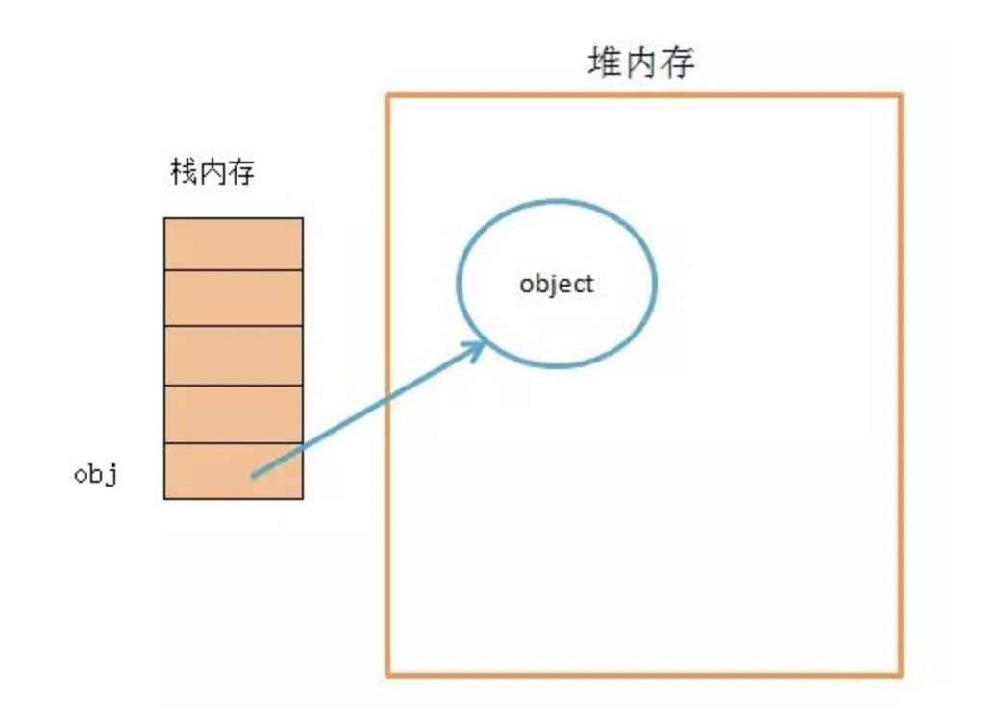
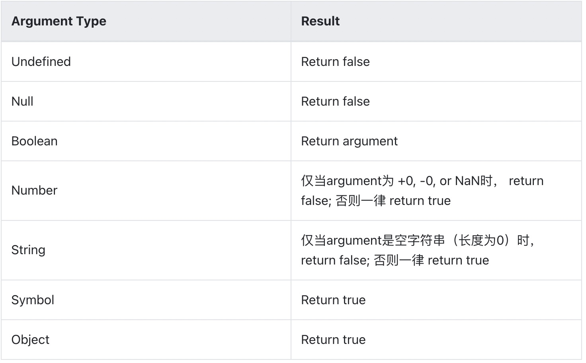
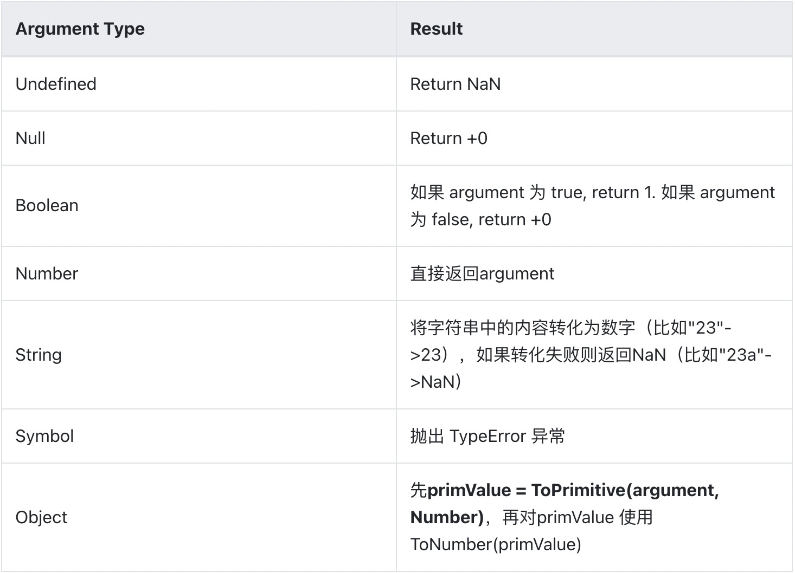
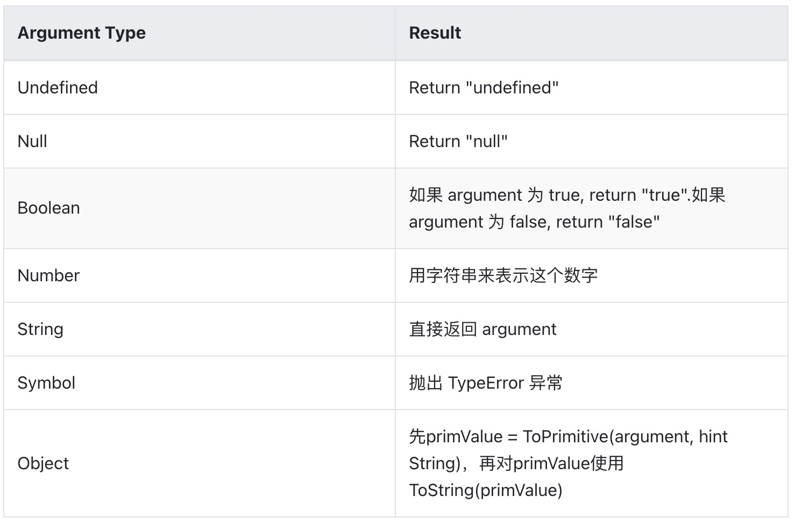
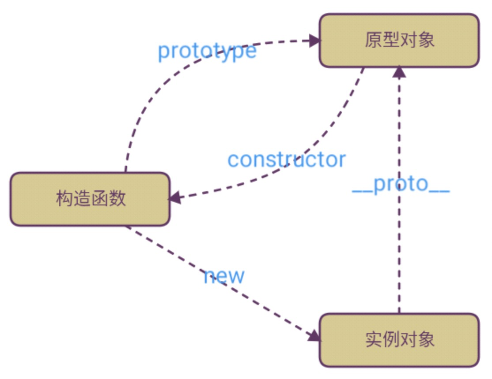
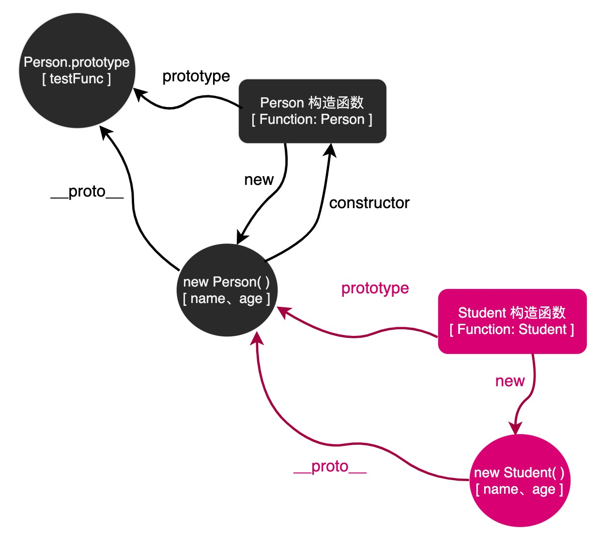
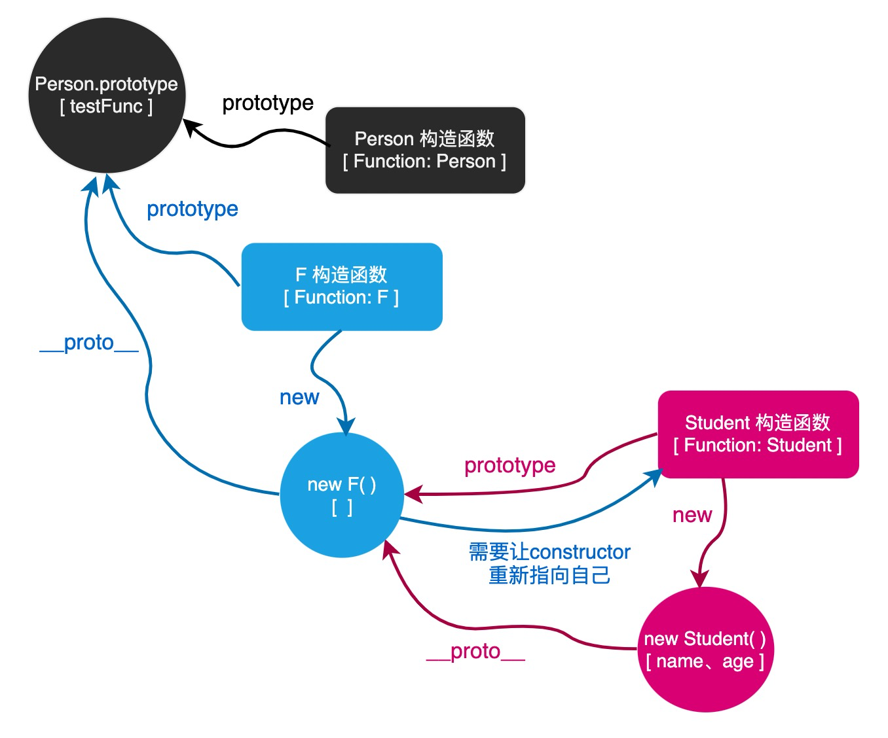

语言基础题
什么是变量提升（暂时性死区）
当 JavaScript 编译所有代码时，所有使用变量声明都被提升到它们的函数/局部作用域的顶部(如果在函数内部声明的话)，或者提升到它们的全局作用域的顶部(如果在函数外部声明的话)，这一步完成是在执行上下文的准备阶段，而不管实际的声明是在哪里进行的。这就是我们所说的“提升”。
请记住，这种“提升”实际上并不发生在你的代码中，而只是一种比喻，与 JavaScript 编译器如何读取你的代码有关。记住当我们想到“提升”的时候，我们可以想象任何被提升的东西都会被移动到顶部，但是实际上你的代码并不会被修改。
函数声明也会被提升，但是被提升到了最顶端，所以将位于所有变量声明之上。
在编译阶段变量和函数声明会被放入内存中，但是你在代码中编写它们的位置会保持不变。
发生变量提升的原因是 js 的执行上下文会有一个创建阶段，创建阶段的时候就会确定函数的形参，函数环境会初始化创建 Arguments 对象，确定普通字面量形式的函数声明，变量声明，函数表达式声明
let const var 的区别？什么是块级作用域？如何用？
- var 定义的变量，没有块的概念，可以跨块访问, 不能跨函数访问，有变量提升。
- let 定义的变量，只能在块作用域里访问，不能跨块访问，也不能跨函数访问，无变量提升，不可以重复声明。
- const 用来定义常量，使用时必须初始化(即必须赋值)，只能在块作用域里访问，而且不能修改，无变量提升，不可以重复声明。
最初在 JS 中作用域有：全局作用域、函数作用域。没有块作用域的概念。
ES6 中新增了块级作用域。块作用域由 { } 包括，if 语句和 for 语句里面的 { } 也属于块作用域。
在以前没有块作用域的时候，在 if 或者 for 循环中声明的变量会泄露成全局变量，其次就是 { } 中的内层变量可能会覆盖外层变量。块级作用域的出现解决了这些问题。
JS 的基本数据类型有哪些？基本数据类型和引用数据类型的区别
数据类型整体上来讲可以分为两大类：基本类型和引用数据类型
基本数据类型，一共有 8 种：
string，number，boolean，undefined，null，bigInt,symbol
其中 symbol、bigInt 类型是在 ES6 及后续版本里面新添加的基本数据类型。
引用数据类型，就只有 1 种：
object
基本数据类型的值又被称之为原始值或简单值，而引用数据类型的值又被称之为复杂值或引用值。
两者的区别在于：
原始值是表示 JavaScript 中可用的数据或信息的最底层形式或最简单形式。简单类型的值被称为原始值，是因为它们是不可细化的。
也就是说，数字是数字，字符是字符，布尔值是 true 或 false，null 和 undefined 就是 null 和 undefined。这些值本身很简单，不能够再进行拆分。由于原始值的数据大小是固定的，所以原始值的数据是存储于内存中的栈区里面的。
在 JavaScript 中，对象就是一个引用值。因为对象可以向下拆分，拆分成多个简单值或者复杂值。引用值在内存中的大小是未知的，因为引用值可以包含任何值，而不是一个特定的已知值，所以引用值的数据都是存储于堆区里面。
最后总结一下两者的区别：
- 访问方式
- 原始值：访问到的是值
- 引用值：访问到的是引用地址
- 比较方式
- 原始值：比较的是值
- 引用值：比较的是地址
- 动态属性
- 原始值：无法添加动态属性
- 引用值：可以添加动态属性
- 变量赋值
- 原始值：赋值的是值
- 引用值：赋值的是地址
存放位置：
- 基本数据类型：基本类型值在内存中占据固定大小，直接存储在栈内存中的数据
- 引用数据类型：引用类型在栈中存储了指针，这个指针指向堆内存中的地址，真实的数据存放在堆内存里。

值的可变性：
- 基本数据类型： 值不可变，javascript 中的原始值（undefined、null、布尔值、数字和字符串）是不可更改的
- 引用数据类型：引用类型是可以直接改变其值的
栈和堆的区别在于堆是动态分配内存，内存大小不一，也不会自动释放。栈是自动分配相对固定大小的内存空间，并由系统自动释放。
在 js 中，基本数据都是直接按值存储在栈中的，每种类型的数据占用的内存空间的大小是确定的，并由系统自动分配和自动释放。这样带来的好处就是，内存可以及时得到回收，相对于堆来说，更加容易管理内存空间。
js 中其他类型的数据被称为引用类型的数据（如对象、数组、函数等），它们是通过拷贝和 new 出来的，这样的数据存储于堆中。其实，说存储于堆中，也不太准确，因为，引用类型的数据的地址指针是存储于栈中的，当我们想要访问引用类型的值的时候，需要先从栈中获得对象的地址指针，然后，在通过地址指针找到堆中的所需要的数据。
NaN 是什么
NaN 的全称为 Not a Number，表示非数，或者说不是一个数。虽然 NaN 表示非数，但是它却属于 number 类型。
NaN 有两个特点：
- 任何涉及 NaN 的操作都会返回 NaN
- NaN 和任何值都不相等，包括它自己本身
undefined==null 返回的结果是什么？undefined 与 null 的区别在哪？
返回 true。
这两个值都表示“无”的意思。
通常情况下， 当我们试图访问某个不存在的或者没有赋值的变量时，就会得到一个 undefined 值。Javascript 会自动将声明是没有进行初始化的变量设为 undifined。
而 null 值表示空，null 不能通过 Javascript 来自动赋值，也就是说必须要我们自己手动来给某个变量赋值为 null。
先有 null 后有 undefined 出来，undefined 是为了填补之前的坑。
null 是一个表示”无”的对象（空对象指针），转为数值时为 0；
典型用法是：
- 作为函数的参数，表示该函数的参数不是对象。
- 作为对象原型链的终点。
undefined 是一个表示”无”的原始值，转为数值时为 NaN。
典型用法是：
- 变量被声明了，但没有赋值时，就等于 undefined。
- 调用函数时，应该提供的参数没有提供，该参数等于 undefined。
- 对象没有赋值的属性，该属性的值为 undefined。
- 函数没有返回值时，默认返回 undefined。
对变量进行类型判断的方式有哪些
- typeof
typeof 是一个操作符，其右侧跟一个一元表达式，并返回这个表达式的数据类型。返回的结果用该类型的字符串(全小写字母)形式表示，包括以下 8 种：number、boolean、string、undefined、symbol、bigint、object、function
- instanceof
instanceof 是用来判断 A 是否为 B 的实例，表达式为：A instanceof B，如果 A 是 B 的实例，则返回 true,否则返回 false。 在这里需要特别注意的是：instanceof 检测的是原型。
用一段伪代码来模拟其内部执行过程：
instanceof (A,B) = {
varL = A.__proto__;
varR = B.prototype;
if(L === R) {
// A的内部属性 __proto__ 指向 B 的原型对象
return true;
}
return false;
}
从上述过程可以看出，当 A 的 proto 指向 B 的 prototype 时，就认为 A 就是 B 的实例。
需要注意的是，instanceof 只能用来判断两个对象是否属于实例关系， 而不能判断一个对象实例具体属于哪种类型。
例如：[ ] instanceof Object 返回的也会是 true。
- constructor
每个 JavaScript 对象都有一个 constructor 属性，指向创建该对象的构造函数
当一个函数被定义时，JS 引擎会为函数添加 prototype 原型，然后再在 prototype 上添加一个 constructor 属性，并让其指向函数的引用。
- toString
toString( ) 是 Object 的原型方法，调用该方法，默认返回当前对象的 [[Class]] 。这是一个内部属性，其格式为 [object Xxx] ，其中 Xxx 就是对象的类型。
对于 Object 对象，直接调用 toString( ) 就能返回 [object Object] 。而对于其他对象，则需要通过 call / apply 来调用才能返回正确的类型信息（因为其他对象重写了 Object 的 toString 方法）。例如：
Object.prototype.toString.call('') ; // [object String]
Object.prototype.toString.call(1) ; // [object Number]
Object.prototype.toString.call(true) ;// [object Boolean]
Object.prototype.toString.call(Symbol());//[object Symbol]
Object.prototype.toString.call(undefined) ;// [object Undefined]
Object.prototype.toString.call(null) ;// [object Null]
类型转换的方法有哪些
JavaScript 中的数据类型转换，主要有三种方式：
转换函数
js 提供了诸如 parseInt 和 parseFloat 这些转换函数，通过这些转换函数可以进行数据类型的转换 。
类型转换
可以分为两种，隐性转换和显性转换。
- 隐性转换
当不同数据类型之间进行相互运算，或者当对非布尔类型的数据求布尔值的时候，会发生隐性转换。
预期为数字的时候：算术运算的时候，我们的结果和运算的数都是数字，数据会转换为数字来进行计算。
| 类型 | 转换前 | 转换后 |
|---|---|---|
| number | 4 | 4 |
| string | “1” | 1 |
| string | “abc” | NaN |
| string | “” | 0 |
| boolean | true | 1 |
| boolean | false | 0 |
| undefined | undefined | NaN |
| null | null | 0 |
预期为字符串的时候：如果有一个操作数为字符串时，使用+符号做相加运算时，会自动转换为字符串。
预期为布尔的时候：前面在介绍布尔类型时所提到的 9 个值会转为 false，其余转为 true
- 显性转换
所谓显性转换，就是只程序员强制将一种类型转换为另外一种类型。显性转换往往会使用到一些转换方法。常见的转换方法如下：
- 转换为数值类型：Number()，parseInt()，parseFloat()
- 转换为布尔类型：Boolean()
- 转换为字符串类型：toString()，String()
当然，除了使用上面的转换方法，我们也可以通过一些快捷方式来进行数据类型的显性转换，如下：
- 转换字符串：直接和一个空字符串拼接，例如：a = “” + 数据
- 转换布尔：!!数据类型，例如：!!”Hello”
- 转换数值：数据*1 或 /1，例如：”Hello * 1”
隐式转换规则
两个与类型转换有关的函数：valueOf()和 toString()
- valueOf()的语义是，返回这个对象逻辑上对应的原始类型的值。比如说，String 包装对象的 valueOf()，应该返回这个对象所包装的字符串。
- toString()的语义是，返回这个对象的字符串表示。用一个字符串来描述这个对象的内容。
valueOf()和 toString()是定义在 Object.prototype 上的方法，也就是说，所有的对象都会继承到这两个方法。但是在 Object.prototype 上定义的这两个方法往往不能满足我们的需求（Object.prototype.valueOf()仅仅返回对象本身），因此 js 的许多内置对象都重写了这两个函数，以实现更适合自身的功能需要（比如说，String.prototype.valueOf 就覆盖了在 Object.prototype 中定义的 valueOf）。
js 内部用于实现类型转换的 4 个函数
这 4 个方法实际上是 ECMAScript 定义的 4 个抽象的操作，它们在 js 内部使用，进行类型转换。js 的使用者不能直接调用这些函数。
- ToPrimitive ( input [ , PreferredType ] )
- ToBoolean ( argument )
- ToNumber ( argument )
- ToString ( argument )
需要区分这里的 ToString() 和上文谈到的 toString()，一个是 js 引擎内部使用的函数，另一个是定义在对象上的函数。
（1）ToPrimitive ( input [ , PreferredType ] )
将 input 转化成一个原始类型的值。PreferredType 参数要么不传入，要么是 Number 或 String。如果 PreferredType 参数是 Number，ToPrimitive 这样执行：
- 如果 input 本身就是原始类型，直接返回 input。
- 调用**input.valueOf()**，如果结果是原始类型，则返回这个结果。
- 调用**input.toString()**，如果结果是原始类型，则返回这个结果。
- 抛出 TypeError 异常。
以下是 PreferredType 不为 Number 时的执行顺序。
- 如果 PreferredType 参数是 String，则交换上面这个过程的第 2 和第 3 步的顺序，其他执行过程相同。
- 如果 PreferredType 参数没有传入
- 如果 input 是内置的 Date 类型，PreferredType 视为 String
- 否则 PreferredType 视为 Number
可以看出，ToPrimitive 依赖于 valueOf 和 toString 的实现。
（2）ToBoolean ( argument )

只需要记忆 0, null, undefined, NaN, “” 返回 false 就可以了，其他一律返回 true。
（3）ToNumber ( argument )

ToNumber 的转化并不总是成功，有时会转化成 NaN，有时则直接抛出异常。
（4）ToString ( argument )

当 js 期望得到某种类型的值，而实际在那里的值是其他的类型，就会发生隐式类型转换。系统内部会自动调用我们前面说 ToBool
== 和 === 的区别是什么
== 代表相同， === 代表严格相同（数据类型和值都相等）。
当进行双等号比较时候，先检查两个操作数数据类型，如果相同，则进行===比较，如果不同，则愿意为你进行一次类型转换，转换成相同类型后再进行比较，而 === 比较时，如果类型不同，直接就是 false。
从这个过程来看，大家也能发现，某些情况下我们使用 === 进行比较效率要高些，因此，没有歧义的情况下，不会影响结果的情况下，在 JS 中首选 === 进行逻辑比较。
Object.is 方法比较的是什么
Object.is 方法是 ES6 新增的用来比较两个值是否严格相等的方法，与 === (严格相等)的行为基本一致。不过有两处不同：
- +0 不等于 -0。
- NaN 等于自身。
所以可以将 Object.is 方法看作是加强版的严格相等。
JS 执行上下文栈
执行上下文是评估和执行 JavaScript 代码的环境的抽象概念。每当 Javascript 代码在运行的时候，它都是在执行上下文中运行。
执行上下文的类型
JavaScript 中有三种执行上下文类型。
- 全局执行上下文 — 这是默认或者说基础的上下文，任何不在函数内部的代码都在全局上下文中。它会执行两件事：创建一个全局的 window 对象（浏览器的情况下），并且设置 this 的值等于这个全局对象。一个程序中只会有一个全局执行上下文。
- 函数执行上下文 — 每当一个函数被调用时, 都会为该函数创建一个新的上下文。每个函数都有它自己的执行上下文，不过是在函数被调用时创建的。函数上下文可以有任意多个。每当一个新的执行上下文被创建，它会按定义的顺序执行一系列步骤。
- Eval 函数执行上下文 — 执行在 eval 函数内部的代码也会有它属于自己的执行上下文。
调用栈
调用栈是解析器(如浏览器中的的 javascript 解析器)的一种机制，可以在脚本调用多个函数时，跟踪每个函数在完成执行时应该返回控制的点。（如什么函数正在执行，什么函数被这个函数调用，下一个调用的函数是谁）
- 当脚本要调用一个函数时，解析器把该函数添加到栈中并且执行这个函数。
- 任何被这个函数调用的函数会进一步添加到调用栈中，并且运行到它们被上个程序调用的位置。
- 当函数运行结束后，解释器将它从堆栈中取出，并在主代码列表中继续执行代码。
- 如果栈占用的空间比分配给它的空间还大，那么则会导致“栈溢出”错误。
执行上下文生命周期
执行上下文的生命周期有两个阶段：
- 创建阶段（进入执行上下文）：函数被调用时，进入函数环境，为其创建一个执行上下文，此时进入创建阶段。(也叫预解析或者预编译）
- 执行阶段（代码执行）：执行函数中代码时，此时执行上下文进入执行阶段。
创建阶段
创建阶段要做的事情主要如下：
- 创建变量对象（VO：variable object）
- 确定函数的形参（并赋值）
- 函数环境会初始化创建 Arguments 对象（并赋值）
- 确定普通字面量形式的函数声明（并赋值）
- 变量声明，函数表达式声明（未赋值）
- 确定 this 指向（this** **由调用者确定）
- 确定作用域（词法环境决定，哪里声明定义，就在哪里确定）
执行阶段
一句一句执行
this 指向
总结起来，this 的指向规律有如下几条：
- 在函数体中，非显式或隐式地简单调用函数时，在严格模式下，函数内的 this 会被绑定到 undefined 上，在非严格模式下则会被绑定到全局对象 window/global 上。
- 一般使用 new 方法调用构造函数时，构造函数内的 this 会被绑定到新创建的对象上。
- 一般通过 call/apply/bind 方法显式调用函数时，函数体内的 this 会被绑定到指定参数的对象上。
- 在箭头函数中，this 的指向是由外层（函数或全局）作用域来决定的。
JS 的作用域，作用域链，作用域类型
作用域是在运行时代码中的某些特定部分中变量，函数和对象的可访问性。换句话说，作用域决定了代码区块中变量和其他资源的可见性。ES6 之前 JavaScript 没有块级作用域，只有全局作用域和函数作用域。ES6 的到来，为我们提供了块级作用域。
作用域链指的是作用域与作用域之间形成的链条。当我们查找一个当前作用域没有定义的变量（自由变量）的时候，就会向上一级作用域寻找，如果上一级也没有，就再一层一层向上寻找，直到找到全局作用域还是没找到，就宣布放弃。这种一层一层的关系，就是作用域链 。
在 JavaScript 里面，作用域一共有 4 种类型：全局作用域，块级作用域、函数作用域以及 eval 作用域。
全局作用域：这个是默认的代码运行环境，一旦代码被载入，引擎最先进入的就是这个环境。
块级作用域：当使用 let 或者 const 声明变量时，这些变量在一对花括号中存在块级作用域，只能够在花括号内部进行访问使用。
函数作用域：当进入到一个函数的时候，就会产生一个函数作用域。函数作用域里面所声明的变量只在函数中提供访问使用。
eval 作用域：当调用 eval( ) 函数的时候，就会产生一个 eval 作用域。
什么是 js 的闭包？有什么作用？
当一个函数在定义时，内部函数引用了外部函数的变量，即使外部函数已经执行完毕，内部函数依然可以访问外部函数的变量。这种情况就形成了闭包。
闭包产生的本质是当前环境中存在指向父级作用域的引用
闭包的用处：
- 匿名自执行函数
- 结果缓存(返回函数)
- 封装
- 实现类和继承
- 函数当做参数传递
应用场景
- 柯里化 bind
- 模块
闭包的缺点：
因为闭包的作用域链会引用包含它的函数的活动对象，导致这些活动对象不会被销毁，因此会占用更多的内存。如果要销毁一个闭包，可以 把被引用的变量设置为 null，即手动清除变量，这样下次 js 垃圾回收机制回收时，就会把设为 null 的量给回收了。
call、apply、bind 的区别，手写
call 和 apply 的功能相同，区别在于传参的方式不一样:
- fn.call(obj, arg1, arg2, …) 调用一个函数, 具有一个指定的 this 值和分别地提供的参数(参数的列表)。
- fn.apply(obj, [argsArray]) 调用一个函数，具有一个指定的 this 值，以及作为一个数组（或类数组对象）提供的参数。
bind 和 call/apply 有一个很重要的区别，一个函数被 call/apply 的时候，会直接调用，但是 bind 会创建一个新函数。当这个新函数被调用时，bind( ) 的第一个参数将作为它运行时的 this，之后的一序列参数将会在传递的实参前传入作为它的参数。
函数柯里化
柯里化（currying）又称部分求值。一个柯里化的函数首先会接受一些参数，接受了这些参数之后，该函数并不会立即求值，而是继续返回另外一个函数，刚才传入的参数在函数形成的闭包中被保存起来。待到函数被真正需要求值的时候，之前传入的所有参数都会被一次性用于求值。
举个例子，就是把原本：
function(arg1,arg2) 变成 function(arg1)(arg2)
new 操作符都做了哪些事,实现 new
new 运算符创建一个用户定义的对象类型的实例或具有构造函数的内置对象的实例。
new 关键字会进行如下的操作：
步骤 1：创建一个空的简单 JavaScript 对象，即 { } ;
步骤 2：链接该对象到另一个对象（即设置该对象的原型对象）；
步骤 3：将步骤 1 新创建的对象作为 this 的上下文；
步骤 4：如果该函数没有返回对象，则返回 this。
// 构造器函数 let Parent = function (name, age) { this.name = name; this.age =
age; }; Parent.prototype.sayName = function () { console.log(this.name); };
//自己定义的new方法 let newMethod = function (Parent, ...rest) { //
1.以构造器的prototype属性为原型，创建新对象； let child =
Object.create(Parent.prototype); // 2.将this和调用参数传给构造器执行 let result
= Parent.apply(child, rest); // 3.如果构造器没有手动返回对象，则返回第一步的对象
return typeof result === 'object' ? result : child; };
//创建实例，将构造函数Parent与形参作为参数传入 const child = newMethod(Parent,
'echo', 26); child.sayName() //'echo'; //最后检验，与使用new的效果相同
console.log(child instanceof Parent)//true
console.log(child.hasOwnProperty('name'))//true
console.log(child.hasOwnProperty('age'))//true
console.log(child.hasOwnProperty('sayName'))//false
对一个构造函数实例化后， 它的原型链指向什么
指向该构造函数实例化出来对象的原型对象。
对于构造函数来讲，可以通过 prototype 访问到该对象。
对于实例对象来讲，可以通过隐式属性 proto 来访问到。
根据 ES6 构造函数的书写方式，写出 ES5 的
ES6 的 class 和普通构造函数的区别有以下几点：
- ES6 中的 class 必须通过 new 来调用，不能当做普通函数调用，否则报错因此，在答案中，加入了 new.target 来判断调用方式
- ES6 的 class 中的所有代码均处于严格模式之下因此，在答案中，无论是构造函数本身，还是原型方法，都使用了严格模式
- ES6 中的原型方法是不可被枚举的因此，在答案中，定义原型方法使用了属性描述符，让其不可枚举
class Example {
constructor(name) {
this.name = name;
}
init() {
const fun = () => { console.log(this.name) }
fun();
}
}
const e = new Example('Hello');
e.init();
参考答案：
function Example(name) {
'use strict';
if (!new.target) {
throw new TypeError('Class constructor cannot be invoked without new');
}
this.name = name;
}
Object.defineProperty(Example.prototype, 'init', {
enumerable: false,
value: function () {
'use strict';
if (new.target) {
throw new TypeError('init is not a constructor');
}
var fun = function () {
console.log(this.name);
}
fun.call(this);
}
})
class 是如何实现的
class 是 ES6 新推出的关键字，它是一个语法糖，本质上就是基于这个原型实现的。只不过在以前 ES5 原型实现的基础上，添加了一些 _classCallCheck、_defineProperties、_createClass 等方法来做出了一些特殊的处理。
例如：
class Hello {
constructor(x) {
this.x = x;
}
greet() {
console.log("Hello, " + this.x)
}
}
"use strict";
function _classCallCheck(instance, Constructor) {
if (!(instance instanceof Constructor)) {
throw new TypeError("Cannot call a class as a function");
}
}
function _defineProperties(target, props) {
for (var i = 0; i < props.length; i++) {
var descriptor = props[i];
descriptor.enumerable = descriptor.enumerable || false;
descriptor.configurable = true;
if ("value" in descriptor)
descriptor.writable = true;
Object.defineProperty(target, descriptor.key, descriptor);
}
}
function _createClass(Constructor, protoProps, staticProps) {
console.log("Constructor::",Constructor);
console.log("protoProps::",protoProps);
console.log("staticProps::",staticProps);
if (protoProps)
_defineProperties(Constructor.prototype, protoProps);
if (staticProps)
_defineProperties(Constructor, staticProps);
return Constructor;
}
var Hello = function () {
function Hello(x) {
_classCallCheck(this, Hello);
this.x = x;
}
_createClass(Hello, [{
key: "greet",
value: function greet() {
console.log("Hello, " + this.x);
}
}]);
return Hello;
}();
通过 new 的方式创建对象和通过字面量创建有什么区别？
通过 new 的方式创建对象和通过字面量创建的对象，区别在于 new 出来的对象的原型对象为构造函数.prototype，而字面量对象的原型对象为 Object.prototype
function Computer() {}
var c = new Computer();
var d = {};
console.log(c.__proto__ === Computer.prototype); // true
console.log(d.__proto__ === Object.prototype); // true
箭头函数有哪些特点，与普通函数的不同点
箭头函数主要解决了 this 的指向问题，在 ES5 时代，一旦对象的方法里面又存在函数，则 this 的指向往往会让开发人员抓狂。
- 更简洁的语法
- 只有一个形参就不需要用括号括起来
- 如果函数体只有一行，就不需要放到一个块中
- 如果 return 语句是函数体内唯一的语句，就不需要 return 关键字
- 箭头函数没有自己的 this，arguments，super
- 箭头函数 this 只会从自己的作用域链的上一层继承 this。
和普通函数的区别
- 外形不同。箭头函数使用箭头定义，普通函数中没有
- 普通函数可以有匿名函数，也可以有具体名函数，但是箭头函数都是匿名函数。
- 箭头函数不能用于构造函数，不能使用 new，不具有 new.target，不具有 super（普通函数可以用于构造函数，以此创建对象实例）
- 箭头函数中 this 的指向不同，在普通函数中，this 总是指向调用它的对象，如果用作构造函数，this 指向创建的对象实例。 箭头函数本身不创建 this，也可以说箭头函数本身没有 this，但是它在声明时可以捕获其所在上下文的 this 供自己使用（继承父执行上下文里面的 this,他的 this 指向是静态的）
- 每一个普通函数调用后都具有一个 arguments 对象，用来存储实际传递的参数。但是箭头函数并没有此对象。取而代之用 rest 参数来解决。
- 箭头函数不能用于 Generator 函数，不能使用 yeild 关键字。
- 箭头函数不具有 prototype 原型对象。而普通函数具有 prototype 原型对象。
原型与原型链
- 每个实例对象都有一个 proto 属性，该属性指向自己的原型对象
- 每个构造函数都有一个 prototype 属性，该属性指向实例对象的原型对象
- 原型对象里的 constructor 方法指向构造函数本身

每个对象都有自己的原型对象，而原型对象本身，也有自己的原型对象，从而形成了一条原型链条。
当试图访问一个对象的属性时，它不仅仅在该对象上搜寻，还会搜寻该对象的原型，以及该对象的原型的原型，依次层层向上搜索，直到找到一个名字匹配的属性或到达原型链的末尾。
我们可以通过手动赋值的方式来改变原型链所对应的原型对象。
js 继承
共有四种继承方式：原型链继承，构造函数继承，伪经典继承，圣杯继承
原型链继承
重点：让新实例的原型等于父类的实例。
特点：实例可继承的属性有：实例的构造函数的属性，父类构造函数属性，父类原型的属性。（新实例不会继承父类实例的属性！）
缺点：
- 1、新实例无法向父类构造函数传参。
- 2、继承单一。
- 3、所有新实例都会共享父类实例的属性。（原型上的属性是共享的，一个实例修改了原型属性，另一个实例的原型属性也会被修改！）
借用构造函数继承
- 重点：用 call( ) 和 apply( ) 将父类构造函数引入子类函数（在子类函数中做了父类函数的自执行（复制））
- 特点：
- 1、只继承了父类构造函数的属性，没有继承父类原型的属性。
- 2、解决了原型链继承缺点 1、2、3。
- 3、可以继承多个构造函数属性（call 多个）。
- 4、在子实例中可向父实例传参。
- 缺点：
- 1、只能继承父类构造函数的属性。
- 2、无法实现构造函数的复用。（每次用每次都要重新调用）
- 3、每个新实例都有父类构造函数的副本，臃肿。
伪经典继承（组合继承）
该继承方式综合了原型链和盗用构造函数的方式，将两者的优点集中了起来。组合继承弥补了之前原型链和盗用构造函数这两种方式各自的不足。
缺点
- 组合继承最大的问题就是效率问题。最主要就是父类的构造函数始终会被调用两次：一次是在创建子类原型时调用，另一次是在子类构造函数中调用。
- 本质上，子类原型最终是要包含超类对象的所有实例属性，子类构造函数只要在执行时重写自己的原型就行了。
下面是一个组合继承的例子：
// 基类
var Person = function (name, age) {
this.name = name;
this.age = age;
}
Person.prototype.test = "this is a test";
Person.prototype.testFunc = function () {
console.log('this is a testFunc');
}
// 子类
var Student = function (name, age, gender, score) {
Person.apply(this, [name, age]); // 盗用构造函数
this.gender = gender;
this.score = score;
}
Student.prototype = new Person(); // 改变 Student 构造函数的原型对象
Student.prototype.testStuFunc = function () {
console.log('this is a testStuFunc');
}
// 测试
var zhangsan = new Student("张三", 18, "男", 100);
console.log(zhangsan.name); // 张三
console.log(zhangsan.age); // 18
console.log(zhangsan.gender); // 男
console.log(zhangsan.score); // 100
console.log(zhangsan.test); // this is a test
zhangsan.testFunc(); // this is a testFunc
zhangsan.testStuFunc(); // this is a testStuFunc
圣杯模式的继承解决了这一问题，其基本思路就是不通过调用父类构造函数来给子类原型赋值，而是取得父类原型的一个副本，然后将返回的新对象赋值给子类原型。
在上面的例子中，我们使用了组合继承的方式来实现继承，可以看到无论是基类上面的属性和方法，还是子类自己的属性和方法，都得到了很好的实现。
但是在组合继承中存在效率问题，比如在上面的代码中，我们其实调用了两次 Person，产生了两组 name 和 age 属性，一组在原型上，一组在实例上。
也就是说，我们在执行 Student.prototype = new Person( ) 的时候，我们是想要 Person 原型上面的方法，属性是不需要的，因为属性之后可以通过 Person.apply(this, [name, age]) 拿到，但是当你 new Person( ) 的时候，会实例化一个 Person 对象出来，这个对象上面，属性和方法都有。
组合模式（伪经典模式）下的继承示意图：

圣杯继承
圣杯模式的继承解决了这一问题，其基本思路就是不通过调用父类构造函数来给子类原型赋值，而是取得父类原型的一个副本，然后将返回的新对象赋值给子类原型。
下面是一个圣杯模式的示例：
// target 是子类，origin 是基类
// target ---> Student, origin ---> Person
function inherit(target, origin) {
function F() { }; // 没有任何多余的属性
// origin.prototype === Person.prototype, origin.prototype.constructor === Person 构造函数
F.prototype = origin.prototype;
// 假设 new F() 出来的对象叫小 f
// 那么这个 f 的原型对象 === F.prototype === Person.prototype
// 那么 f.constructor === Person.prototype.constructor === Person 的构造函数
target.prototype = new F();
// 而 f 这个对象又是 target 对象的原型对象
// 这意味着 target.prototype.constructor === f.constructor
// 所以 target 的 constructor 会指向 Person 构造函数
// 我们要让子类的 constructor 重新指向自己
// 若不修改则会发现 constructor 指向的是父类的构造函数
target.prototype.constructor = target;
}
// 基类
var Person = function (name, age) {
this.name = name;
this.age = age;
}
Person.prototype.test = "this is a test";
Person.prototype.testFunc = function () {
console.log('this is a testFunc');
}
// 子类
var Student = function (name, age, gender, score) {
Person.apply(this, [name, age]);
this.gender = gender;
this.score = score;
}
inherit(Student, Person); // 使用圣杯模式实现继承
// 在子类上面添加方法
Student.prototype.testStuFunc = function () {
console.log('this is a testStuFunc');
}
// 测试
var zhangsan = new Student("张三", 18, "男", 100);
console.log(zhangsan.name); // 张三
console.log(zhangsan.age); // 18
console.log(zhangsan.gender); // 男
console.log(zhangsan.score); // 100
console.log(zhangsan.test); // this is a test
zhangsan.testFunc(); // this is a testFunc
zhangsan.testStuFunc(); // this is a testStuFunc
在上面的代码中，我们在 inherit 方法中创建了一个中间层，之后让 F 的原型和父类的原型指向同一地址，再让子类的原型指向这个 F 的实例化对象来实现了继承。
这样我们的继承，属性就不会像之前那样实例对象上一份，原型对象上一份，拥有两份。圣杯模式继承是目前 js 继承的最优解。
圣杯模式下的继承示意图：

ES6 新增了 extends 关键字，直接使用该关键字就能够实现继承。
他是基于原型链继承的
原型链继承：
- 在 JavaScript 中，每个对象都有一个原型链，通过原型链来查找属性和方法。继承实际上是通过原型链机制来实现的。
- 当子类创建实例时，它的原型链上会有父类的原型，因此子类实例可以访问父类的方法。
类和构造函数的关系：
- 在 JavaScript 内部，类本质上还是函数（构造函数），只不过
class语法让它们更加易于使用和理解。 - 使用
class声明类时，JavaScript 引擎会自动创建一个与类名相同的函数，并将类的所有方法添加到这个函数的原型中。
手写 extends
function extend(child, parent) {
// 创建一个空函数 F，作为中介
var F = function() {};
// 将子类的原型指向一个父类的实例
F.prototype = parent.prototype;
// 实例化 F，并将结果赋给子类的原型
child.prototype = new F();
// 将子类的构造函数指回自己
child.prototype.constructor = child;
}
// 示例用法
function Animal(name) {
this.name = name;
}
Animal.prototype.speak = function() {
console.log(`${this.name} makes a noise.`);
};
function Dog(name) {
// 调用父类构造函数
Animal.call(this, name);
}
// 使用 extend 函数实现继承
extend(Dog, Animal);
// 覆盖父类方法
Dog.prototype.speak = function() {
console.log(`${this.name} barks.`);
};
// 创建实例并调用方法
var animal = new Animal('Animal');
animal.speak(); // 输出: Animal makes a noise.
var dog = new Dog('Dog');
dog.speak(); // 输出: Dog barks.
解释：
**extend**** 函数**：extend函数接收两个参数child和parent，分别代表子类和父类。- 创建一个空的函数
F，并将F.prototype指向父类的原型对象，这样F函数的实例就可以继承父类的方法和属性。 - 将子类的原型
child.prototype设置为new F()的实例，从而实现了子类继承父类的原型。 - 最后，将子类的构造函数指回自己，确保子类的实例可以通过
new关键字正确创建。
- 示例用法：
- 定义
Animal构造函数和speak方法，作为父类。 - 定义
Dog构造函数，并通过Animal.call(this, name);调用父类构造函数，从而继承父类的属性。 - 使用
extend函数将Dog类继承自Animal类。 - 在
Dog.prototype上定义speak方法，覆盖父类的speak方法。
- 定义
- 实例化和调用：
- 创建
Animal和Dog的实例，并调用其方法，验证继承和方法覆盖的正确性。
- 创建
这个 extend 函数简单地演示了如何在 JavaScript 中手动实现类似 ES6 中 class 和 extends 的继承功能。在实际应用中，为了支持更复杂的继承链和更多的特性，可能需要更复杂的实现方式，但基本的原理与这个示例是类似的。
异步，事件循环
在最早期的时候，JavaScript 中要实现异步操作，使用的就是 Callback 回调函数。
但是回调函数会产生回调地狱（Callback Hell）
之后 ES6 推出了 Promise 解决方案来解决回调地狱的问题。不过，虽然 Promise 作为 ES6 中提供的一种新的异步编程解决方案，但是它也有问题。比如，代码并没有因为新方法的出现而减少，反而变得更加复杂，同时理解难度也加大。
之后，就出现了基于 Generator 的异步解决方案。不过，这种方式需要编写外部的执行器，而执行器的代码写起来一点也不简单。当然也可以使用一些插件，比如 co 模块来简化执行器的编写。
ES7 提出的 async 函数，终于让 JavaScript 对于异步操作有了终极解决方案。
实际上，async 只是生成器的一种语法糖而已，简化了外部执行器的代码，同时利用 await 替代 yield，async 替代生成器的*号。
Promise
Promise 是异步编程的一种解决方案，比传统的解决方案——回调函数和事件——更合理且更强大。它最早由社区提出并实现，ES6 将其写进了语言标准，统一了用法，并原生提供了 Promise 对象。
特点
- 对象的状态不受外界影响 （3 种状态）
- Pending 状态（进行中）
- Fulfilled 状态（已成功）
- Rejected 状态（已失败）
- 一旦状态改变就不会再变 （两种状态改变：成功或失败）
- Pending -> Fulfilled
- Pending -> Rejected
用法
var promise = new Promise(function(resolve, reject){
// ... some code
if (/* 异步操作成功 */) {
resolve(value);
} else {
reject(error);
}
})
promise.all 方法的使用场景？数组中必须每一项都是 promise 对象吗？不是 promise 对象会如何处理 ？
promise.all(promiseArray) 方法是 promise 对象上的静态方法，该方法的作用是将多个 promise 对象实例包装，生成并返回一个新的 promise 实例。
此方法在集合多个 promise 的返回结果时很有用。
返回值将会按照参数内的 promise 顺序排列，而不是由调用 promise 的完成顺序决定。
promise.all 的特点
接收一个 Promise 实例的数组或具有 Iterator 接口的对象
如果元素不是 Promise 对象，则使用 Promise.resolve 转成 Promise 对象
如果全部成功，状态变为 resolved，返回值将组成一个数组传给回调
只有有一个失败，状态就变为 rejected，返回值将直接传递给回调 all( )的返回值，也是新的 promise 对象
promise 的 all、race。请说下这两者的区别
promise.all 方法参数是一个 promise 的数组,只有当所有的 promise 都完成并返回成功，才会调用 resolve，当有一个失败，都会进 catch，被捕获错误，promise.all 调用成功返回的结果是每个 promise 单独调用成功之后返回的结果组成的数组,如果调用失败的话，返回的则是第一个 reject 的结果
promise.race 也会调用所有的 promise，返回的结果则是所有 promise 中最先返回的结果，不关心是成功还是失败。
async 与 await 的作用
async 是一个修饰符，async 定义的函数会默认的返回一个 Promise 对象 resolve 的值，因此对 async 函数可以直接进行 then 操作，返回的值即为 then 方法的传入函数。
await 关键字只能放在 async 函数内部， await 关键字的作用就是获取 Promise 中返回的内容， 获取的是 Promise 函数中 resolve 或者 reject 的值。
async 函数表示函数里面可能会有异步方法，await 后面跟一个表达式，async 方法执行时，遇到 await 会立即执行表达式，然后把表达式后面的代码放到微任务队列里，让出执行栈让同步代码先执行。
await async 如何实现
async 函数只是 promise 的语法糖，它的底层实际使用的是 generator，而 generator 又是基于 promise 的。实际上，在 babel 编译 async 函数的时候，也会转化成 generator 函数，并使用自动执行器来执行它。
实现代码示例：
function asyncToGenerator(generatorFunc) {
return function() {
const gen = generatorFunc.apply(this, arguments)
return new Promise((resolve, reject) => {
function step(key, arg) {
let generatorResult
try {
generatorResult = gen[key](arg)
} catch (error) {
return reject(error)
}
const { value, done } = generatorResult
if (done) {
return resolve(value)
} else {
return Promise.resolve(value).then(val => step('next', val), err => step('throw', err))
}
}
step("next")
})
}
}
关于代码的解析，可以参阅：https://blog.csdn.net/xgangzai/article/details/106536325
深拷贝与浅拷贝
- 浅拷贝：只是拷贝了基本类型的数据，而引用类型数据，复制后也是会发生引用，我们把这种拷贝叫做浅拷贝（浅复制）浅拷贝只复制指向某个对象的指针，而不复制对象本身，新旧对象还是共享同一块内存。
- 深拷贝：在堆中重新分配内存，并且把源对象所有属性都进行新建拷贝，以保证深拷贝的对象的引用图不包含任何原有对象或对象图上的任何对象，拷贝后的对象与原来的对象是完全隔离，互不影响。
浅拷贝方法
- 直接赋值
- Object.assign 方法：可以把任意多个的源对象自身的可枚举属性拷贝给目标对象，然后返回目标对象。当拷贝的 object 只有一层的时候，是深拷贝，但是当拷贝的对象属性值又是一个引用时，换句话说有多层时，就是一个浅拷贝。
- ES6 扩展运算符，当 object 只有一层的时候，也是深拷贝。有多层时是浅拷贝。
- Array.prototype.concat 方法
- Array.prototype.slice 方法
深拷贝方法
- JSON.parse(JSON.stringify)：用 JSON.stringify 将对象转成 JSON 字符串，再用 JSON.parse 方法把字符串解析成对象，一去一来，新的对象产生了，而且对象会开辟新的栈，实现深拷贝。这种方法虽然可以实现数组或对象深拷贝，但不能处理函数。
- 手写深拷贝
function deepClone(o1, o2) {
for (let k in o2) {
if (typeof o2[k] === 'object') {
o1[k] = {};
deepClone(o1[k], o2[k]);
} else {
o1[k] = o2[k];
}
}
}
// 测试用例
let obj = {
a: 1,
b: [1, 2, 3],
c: {}
};
let emptyObj = Object.create(null);
deepClone(emptyObj, obj);
console.log(emptyObj.a == obj.a);
console.log(emptyObj.b == obj.b);
垃圾回收与内存泄漏
内存泄漏（Memory Leak）是指程序中己动态分配的堆内存由于某种原因程序未释放或无法释放，造成系统内存的浪费，导致程序运行速度减慢甚至系统崩溃等严重后果。
Javascript 在声明变量的时候自动会分配内存，普通的类型比如 number，一般放在栈内存里，对象放在堆内存里，声明一个变量，就分配一些内存，然后定时进行垃圾回收。垃圾回收的任务由 JavaScript 引擎中的垃圾回收器来完成，它监视所有对象，并删除那些不可访问的对象。
JS 具有自动回收垃圾的机制，即执行环境会负责管理程序执行中使用的内存。编写 JS 代码的时候，开发人员不用再关心内存使用的问题，所需内存的分配以及无用的回收完全实现了自动管理。
Js 中最常用的垃圾收集方式是标记清除(mark-and-sweep)。当变量进入环境（例如，在函数中声明一个变量）时，就将这个变量标记为“进入环境”。从逻辑上讲，永远不能释放进入环境的变量所占的内存，因为只要执行流进入相应的环境，就可能用到它们。而当变量离开环境时，这将其 标记为“离开环境”。
标标记清除方式：
- 工作原理：当变量进入环境时，将这个变量标记为“进入环境”。当变量离开环境时，则将其标记为“离开环境”。标记“离开环境”的就回收内存。
- 工作流程：
- 垃圾回收器，在运行的时候会给存储在内存中的所有变量都加上标记；
- 去掉环境中的变量以及被环境中的变量引用的变量的标记；
- 被加上标记的会被视为准备删除的变量；
- 垃圾回收器完成内存清理工作，销毁那些带标记的值并回收他们所占用的内存空间。
引用计数方式：
- 工作原理：跟踪记录每个值被引用的次数。
- 工作流程：
- 声明了一个变量并将一个引用类型的值赋值给这个变量，这个引用类型值的引用次数就是 1；
- 同一个值又被赋值给另一个变量，这个引用类型值的引用次数加 1；
- 当包含这个引用类型值的变量又被赋值成另一个值了，那么这个引用类型值的引用次数减 1；
- 当引用次数变成 0 时，说明没办法访问这个值了；
- 当垃圾收集器下一次运行时，它就会释放引用次数是 0 的值所占的内存。
常见内存泄漏以及解决方案
- 意外的全局变量
Js 处理未定义变量的方式比较宽松：未定义的变量会在全局对象创建一个新变量。在浏览器中，全局对象是 window。
function foo(arg) {
bar = "this is a hidden global variable"; //等同于window.bar="this is a hidden global variable"
this.bar2= "potential accidental global";//这里的this 指向了全局对象（window）,等同于window.bar2="potential accidental global"
}
解决方法：在 JavaScript 程序中添加，开启严格模式’use strict’，可以有效地避免上述问题。
注意：那些用来临时存储大量数据的全局变量，确保在处理完这些数据后将其设置为 null 或重新赋值。与全局变量相关的增加内存消耗的一个主因是缓存。缓存数据是为了重用，缓存必须有一个大小上限才有用。高内存消耗导致缓存突破上限，因为缓 存内容无法被回收。
- 循环引用
在 js 的内存管理环境中，对象 A 如果有访问对象 B 的权限，叫做对象 A 引用对象 B。引用计数的策略是将“对象是否不再需要”简化成“对象有没有其他对象引用到它”，如果没有对象引用这个对象，那么这个对象将会被回收 。
let obj1 = { a: 1 }; // 一个对象（称之为 A）被创建，赋值给 obj1，A 的引用个数为 1
let obj2 = obj1; // A 的引用个数变为 2
obj1 = 0; // A 的引用个数变为 1
obj2 = 0; // A 的引用个数变为 0，此时对象 A 就可以被垃圾回收了
但是引用计数有个最大的问题： 循环引用。
function func() {
let obj1 = {};
let obj2 = {};
obj1.a = obj2; // obj1 引用 obj2
obj2.a = obj1; // obj2 引用 obj1
}
当函数 func 执行结束后，返回值为 undefined，所以整个函数以及内部的变量都应该被回收，但根据引用计数方法，obj1 和 obj2 的引用次数都不为 0，所以他们不会被回收。要解决循环引用的问题，最好是在不使用它们的时候手工将它们设为空。上面的例子可以这么做：
obj1 = null;
obj2 = null;
- 被遗忘的计时器和回调函数
let someResource = getData();
setInterval(() => {
const node = document.getElementById('Node');
if(node) {
node.innerhtml = JSON.stringify(someResource));
}
}, 1000);
上面的例子中，我们每隔一秒就将得到的数据放入到文档节点中去。
但在 setInterval 没有结束前，回调函数里的变量以及回调函数本身都无法被回收。那什么才叫结束呢？
就是调用了 clearInterval。如果回调函数内没有做什么事情，并且也没有被 clear 掉的话，就会造成内存泄漏。
不仅如此，如果回调函数没有被回收，那么回调函数内依赖的变量也没法被回收。上面的例子中，someResource 就没法被回收。同样的，setTiemout 也会有同样的问题。所以，当不需要 interval 或者 timeout 时，最好调用 clearInterval 或者 clearTimeout。
- DOM 泄漏
在 JS 中对 DOM 操作是非常耗时的。因为 JavaScript/ECMAScript 引擎独立于渲染引擎，而 DOM 是位于渲染引擎，相互访问需要消耗一定的资源。 而 IE 的 DOM 回收机制便是采用引用计数的，以下主要针对 IE 而言的。
a. 没有清理的 DOM 元素引用
var refA = document.getElementById('refA');
document.body.removeChild(refA);
// refA 不能回收，因为存在变量 refA 对它的引用。将其对 refA 引用释放，但还是无法回收 refA。
解决办法：refA = null;
b. 给 DOM 对象添加的属性是一个对象的引用
var MyObject = {};
document.getElementById('mydiv').myProp = MyObject;
解决方法： 在 window.onunload 事件中写上: document.getElementById(‘mydiv’).myProp = null;
c. DOM 对象与 JS 对象相互引用
function Encapsulator(element) {
this.elementReference = element;
element.myProp = this;
}
new Encapsulator(document.getElementById('myDiv'));
解决方法： 在 onunload 事件中写上: document.getElementById(‘myDiv’).myProp = null;
d. 给 DOM 对象用 attachEvent 绑定事件
function doClick() {}
element.addeventListen("onclick", doClick);
解决方法： 在 onunload 事件中写上: element.detachEvent(‘onclick’, doClick);
e. 从外到内执行 appendChild。这时即使调用 removeChild 也无法释放
var parentDiv = document.createElement("div");
var childDiv = document.createElement("div");
document.body.appendChild(parentDiv);
parentDiv.appendChild(childDiv);
解决方法： 从内到外执行 appendChild:
var parentDiv = document.createElement("div");
var childDiv = document.createElement("div");
parentDiv.appendChild(childDiv);
document.body.appendChild(parentDiv);
- JS 的闭包
值得注意的是闭包本身不会造成内存泄漏，但闭包过多很容易导致内存泄漏。闭包会造成对象引用的生命周期脱离当前函数的上下文，如果闭包如果使用不当，可以导致环形引用（circular reference），类似于死锁，只能避免，无法发生之后解决，即使有垃圾回收也还是会内存泄露。
- console
控制台日志记录对总体内存配置文件的影响可能是许多开发人员都未想到的极其重大的问题。记录错误的对象可以将大量数据保留在内存中。注意，这也适用于：
(1) 在用户键入 JavaScript 时，在控制台中的一个交互式会话期间记录的对象。
(2) 由 console.log 和 console.dir 方法记录的对象。
ES6 新增哪些东西
ES6 新增内容众多，这里列举出一些关键的以及平时常用的新增内容：
- 箭头函数
- 字符串模板
- 支持模块化（import、export）
- 类（class、constructor、extends）
- let、const 关键字
- 新增一些数组、字符串等内置构造函数方法，例如 Array.from、Array.of 、Math.sign、Math.trunc 等
- 新增一些语法，例如扩展操作符、解构、函数默认参数等
- 新增一种基本数据类型 Symbol
- 新增元编程相关，例如 proxy、Reflect
- Set 和 Map 数据结构
- Promise
- Generator 生成器
Set、Map、WeakSet 和 WeakMap 的区别
Set
- 成员唯一、无序且不重复
- 键值与键名是一致的（或者说只有键值，没有键名）
- 可以遍历，方法有 add, delete,has
WeakSet
- 成员都是对象
- 成员都是弱引用，可以被垃圾回收机制回收，可以用来保存 DOM 节点，不容易造成内存泄漏
- 不能遍历，方法有 add, delete,has
Map
- 本质上是健值对的集合，类似集合
- 可以遍历，方法很多，可以跟各种数据格式转换
WeakMap
- 只接受对象作为健名（null 除外），不接受其他类型的值作为健名
- 键名是弱引用，键值可以是任意的，键名所指向的对象可以被垃圾机制回收，此时键名是无效的
- 不能遍历，方法有 get、set、has、delete
weakmap、weakset
WeakSet 对象是一些对象值的集合, 并且其中的每个对象值都只能出现一次。在 WeakSet 的集合中是唯一的
它和 Set 对象的区别有两点:
- 与 Set 相比，WeakSet 只能是对象的集合，而不能是任何类型的任意值。
- WeakSet 持弱引用：集合中对象的引用为弱引用。 如果没有其他的对 WeakSet 中对象的引用，那么这些对象会被当成垃圾回收掉。 这也意味着 WeakSet 中没有存储当前对象的列表。 正因为这样，WeakSet 是不可枚举的。
WeakMap 对象也是键值对的集合。它的键必须是对象类型，值可以是任意类型。它的键被弱保持，也就是说，当其键所指对象没有其他地方引用的时候，它会被 GC 回收掉。WeakMap 提供的接口与 Map 相同。
与 Map 对象不同的是，WeakMap 的键是不可枚举的。不提供列出其键的方法。列表是否存在取决于垃圾回收器的状态，是不可预知的。
防抖和节流
我们在平时开发的时候，会有很多场景会频繁触发事件，比如说搜索框实时发请求，onmousemove、resize、onscroll 等，有些时候，我们并不能或者不想频繁触发事件，这时候就应该用到函数防抖和函数节流。
函数防抖(debounce)，指的是短时间内多次触发同一事件，只执行最后一次，或者只执行最开始的一次，中间的不执行。
/** * 函数防抖 * @param {function} func 一段时间后，要调用的函数 * @param
{number} wait 等待的时间，单位毫秒 */ function debounce(func, wait){ //
设置变量，记录 setTimeout 得到的 id let timerId = null; return
function(...args){ if(timerId){ // 如果有值，说明目前正在等待中，清除它
clearTimeout(timerId); } // 重新开始计时 timerId = setTimeout(() => {
func(...args); }, wait); } }
函数节流(throttle)，指连续触发事件但是在 n 秒中只执行一次函数。即 2n 秒内执行 2 次… 。节流如字面意思，会稀释函数的执行频率。
function throttle(func, wait) { let context, args; let previous = 0; return
function () { let now = +new Date(); context = this; args = arguments; if (now -
previous > wait) { func.apply(context, args); previous = now; } } }
proxy 实现代理和 Object.defineProperty 的区别
两者的区别总结如下：
- 代理原理：Object.defineProperty 的原理是通过将数据属性转变为存取器属性的方式实现的属性读写代理。而 Proxy 则是因为这个内置的 Proxy 对象内部有一套监听机制，在传入 handler 对象作为参数构造代理对象后，一旦代理对象的某个操作触发，就会进入 handler 中对应注册的处理函数，此时我们就可以有选择的使用 Reflect 将操作转发被代理对象上。
- 代理局限性：Object.defineProperty 始终还是局限于属性层面的读写代理，对于对象层面以及属性的其它操作代理它都无法实现。鉴于此，由于数组对象 push、pop 等方法的存在，它对于数组元素的读写代理实现的并不完全。而使用 Proxy 则可以很方便的监视数组操作。
- 自我代理：Object.defineProperty 方式可以代理到自身（代理之后使用对象本身即可），也可以代理到别的对象身上（代理之后需要使用代理对象）。Proxy 方式只能代理到 Proxy 实例对象上。这一点在其它说法中是 Proxy 对象不需要侵入对象就可以实现代理，实际上 Object.defineProperty 方式也可以不侵入。
Proxy 的优势如下:
- Object.defineProperty 只能劫持对象的属性,因此我们需要对每个对象的每个属性进行遍历，而 Proxy 可以直接监听对象而非属性；
- Object.defineProperty 无法监控到数组下标的变化，而 Proxy 可以直接监听数组的变化；
- Proxy 有多达 13 种拦截方法；
- Proxy 作为新标准将受到浏览器厂商重点持续的性能优化；
Object.defineProperty 和 ES6 的 Proxy 有什么区别？
1、Object.defineproperty
可以用于监听对象的数据变化
语法： Object.defineproperty(obj, key, descriptor)
let obj = {
age: 11,
};
let value = "xiaoxiao";
//defineproperty 有 gettter 和 setter
Object.defineproperty(obj, "name", {
get() {
return value;
},
set(newValue) {
value = newValue;
},
});
obj.name = "pengpeng";
此外 还有以下配置项 ：
- configurable
- enumerable
- value
缺点：
- 无法监听数组变化
- 只能劫持对象的属性，属性值也是对象那么需要深度遍历
2、proxy ：可以理解为在被劫持的对象之前 加了一层拦截
let proxy = new Proxy(
{},
{
get(obj, prop) {
return obj[prop];
},
set(obj, prop, val) {
obj[prop] = val;
},
}
);
- proxy 返回的是一个新对象， 可以通过操作返回的新的对象达到目的
- proxy 有多达 13 种拦截方法
总结：
- Object.defineProperty 无法监控到数组下标的变化，导致通过数组下标添加元素，不能实时响应
- Object.defineProperty 只能劫持对象的属性，从而需要对每个对象，每个属性进行遍历，如果，属性值是对象，还需要深度遍历。Proxy 可以劫持整个对象，并返回一个新的对象。
- Proxy 不仅可以代理对象，还可以代理数组。还可以代理动态增加的属性。
JS 模块化
模块化主要是用来抽离公共代码，隔离作用域，避免变量冲突等。
IIFE： 使用自执行函数来编写模块化，特点：在一个单独的函数作用域中执行代码，避免变量冲突。
(function(){
return {
data:[]
}
})()
CommonJS： nodejs 中自带的模块化。
var fs = require('fs');
ES Modules： ES6 引入的模块化，支持 import 来引入另一个 js 。
import a from 'a';
ES6 中模块化导入和导出与 common.js 有什么区别
CommonJs 模块输出的是值的拷贝，也就是说，一旦输出一个值，模块内部的变化不会影响到这个值.
// common.js
var count = 1;
var printCount = () =>{
return ++count;
}
module.exports = {
printCount: printCount,
count: count
};
// index.js
let v = require('./common');
console.log(v.count); // 1
console.log(v.printCount()); // 2
console.log(v.count); // 1
你可以看到明明 common.js 里面改变了 count，但是输出的结果还是原来的。这是因为 count 是一个原始类型的值，会被缓存。除非写成一个函数，才能得到内部变动的值。将 common.js 里面的 module.exports 改写成
module.exports = {
printCount: printCount,
get count(){
return count
}
};
这样子的输出结果是 1，2，2
而在 ES6 当中，写法是这样的，是利用 export 和 import 导入的
// es6.js
export let count = 1;
export function printCount() {
++count;
}
// main1.js
import { count, printCount } from './es6';
console.log(count)
console.log(printCount());
console.log(count)
ES6 模块是动态引用，并且不会缓存，模块里面的变量绑定其所有的模块，而是动态地去加载值，并且不能重新赋值，
ES6 输入的模块变量，只是一个“符号连接符”，所以这个变量是只读的，对它进行重新赋值会报错。如果是引用类型，变量指向的地址是只读的，但是可以为其添加属性或成员。
另外还想说一个 export default
let count = 1;
function printCount() {
++count;
}
export default { count, printCount}
// main3.js
import res form './main3.js'
console.log(res.count)
export 与 export default 的区别及联系：
- export 与 export default 均可用于导出常量、函数、文件、模块等
- 你可以在其它文件或模块中通过 import + (常量 | 函数 | 文件 | 模块)名的方式，将其导入，以便能够对其进行使用
- 在一个文件或模块中，export、import 可以有多个，export default 仅有一个
- 通过 export 方式导出，在导入时要加{ }，export default 则不需要。
了解过 js 中 arguments 吗？接收的是实参还是形参？
JS 中的 arguments 是一个伪数组对象。这个伪数组对象将包含调用函数时传递的所有的实参。
为什么函数的 arguments 参数是类数组而不是数组？如何遍历类数组?
首先了解一下什么是数组对象和类数组对象。
数组对象：使用单独的变量名来存储一系列的值。从 Array 构造函数中继承了一些用于进行数组操作的方法。
var mycars = new Array();
mycars[0] = "zhangsan";
mycars[1] = "lisi";
mycars[2] = "wangwu";
类数组对象：对于一个普通的对象来说，如果它的所有 property 名均为正整数，同时也有相应的 length 属性，那么虽然该对象并不是由 Array 构造函数所创建的，它依然呈现出数组的行为，在这种情况下，这些对象被称为“类数组对象”。
两者区别
- 一个是对象，一个是数组
- 数组的 length 属性，当新的元素添加到列表中的时候，其值会自动更新。类数组对象的不会。
- 设置数组的 length 属性可以扩展或截断数组。
- 数组也是 Array 的实例可以调用 Array 的方法，比如 push、pop 等等
所以说 arguments 对象不是一个 Array 。它类似于 Array，但除了 length 属性和索引元素之外没有任何 Array 属性。
可以使用 for…in 来遍历 arguments 这个类数组对象。
纯函数
一个函数，如果符合以下两个特点，那么它就可以称之为纯函数：
- 对于相同的输入，永远得到相同的输出
- 没有任何可观察到的副作用
- 不依赖外部变量
解析：
针对上面的两个特点，我们一个一个来看。
- 相同输入得到相同输出
我们先来看一个不纯的反面典型：
let greeting = 'Hello'
function greet (name) {
return greeting + ' ' + name
}
console.log(greet('World')) // Hello World
上面的代码中，greet(‘World’) 是不是永远返回 Hello World ? 显然不是，假如我们修改 greeting 的值，就会影响 greet 函数的输出。即函数 greet 其实是 依赖外部状态 的。
那我们做以下修改：
function greet (greeting, name) {
return greeting + ' ' + name
}
console.log(greet('Hi', 'Savo')) // Hi Savo
将 greeting 参数也传入，这样对于任何输入参数，都有与之对应的唯一的输出参数了，该函数就符合了第一个特点。
- 没有副作用
副作用的意思是，这个函数的运行，不会修改外部的状态。
下面再看反面典型：
const user = {
username: 'savokiss'
}
let isValid = false
function validate (user) {
if (user.username.length > 4) {
isValid = true
}
}
可见，执行函数的时候会修改到 isValid 的值（注意：如果你的函数没有任何返回值，那么它很可能就具有副作用！）
那么我们如何移除这个副作用呢？其实不需要修改外部的 isValid 变量，我们只需要在函数中将验证的结果 return 出来：
const user = {
username: 'savokiss'
}
function validate (user) {
return user.username.length > 4;
}
const isValid = validate(user)
这样 validate 函数就不会修改任何外部的状态了~
严格模式的限制
什么是严格模式？
严格模式对 JavaScript 的语法和行为都做了一些更改，消除了语言中一些不合理、不确定、不安全之处；提供高效严谨的差错机制，保证代码安全运行；禁用在未来版本中可能使用的语法，为新版本做好铺垫。在脚本文件第一行或函数内第一行中引入”use strict”这条指令，就能触发严格模式，这是一条没有副作用的指令，老版的浏览器会将其作为一行字符串直接忽略。
例如：
"use strict";//脚本第一行
function add(a,b){
"use strict";//函数内第一行
return a+b;
}
进入严格模式后的限制
- 变量必须声明后再赋值
- 不能有重复的参数名，函数的参数也不能有同名属性
- 不能对只读属性赋值
- 不能使用前缀 0 表示八进制数
- 不能删除不可删除的属性
- eval 不会在它的外层作用域引入变量。
- eval 和 arguments 不能被重新赋值
- arguments 不会自动反应函数的变化
- 不能使用 arguments.callee
- 不能使用 arguments.caller
- 禁止 this 指向全局对象
- 不能使用 fn.caller 和 fn.arguments 获取函数调用的堆栈
- 增加了保留字
开启“严格模式”的优点：
- 消除 Javascript 语法的一些不合理、不严谨之处，减少一些怪异行为;
- 消除代码运行的一些不安全之处，保证代码运行的安全；
- 提高编译器效率，增加运行速度；
- 为未来新版本的 Javascript 做好铺垫。
javascript 中什么是伪数组？如何将伪数组转换为标准数组
在 JavaScript 中，arguments 就是一个伪数组对象
可以使用 ES6 的扩展运算符来将伪数组转换为标准数组
例如：
var arr = [...arguments];
JS 有哪些内置对象
数据封装类对象：String，Boolean，Number，Array 和 Object
其他对象：Function，Arguments，Math，Date，RegExp，Error
map 和 forEach 的区别？
两者区别
forEach()方法不会返回执行结果，而是 undefined。
也就是说，forEach()会修改原来的数组。而 map()方法会得到一个新的数组并返回。
适用场景
forEach 适合于你并不打算改变数据的时候，而只是想用数据做一些事情 – 比如存入数据库或则打印出来。
map()适用于你要改变数据值的时候。不仅仅在于它更快，而且返回一个新的数组。这样的优点在于你可以使用复合(composition)(map, filter, reduce 等组合使用)来玩出更多的花样。
symbol 用途
可以用来表示一个独一无二的变量防止命名冲突，还可以利用 symbol 不会被常规的方法(除了 Object.getOwnPropertySymbols 外)遍历到，所以可以用来模拟私有变量。
主要用来提供遍历接口，布置了 symbol.iterator 的对象才可以使用 for···of 循环，可以统一处理数据结构。调用之后回返回一个遍历器对象，包含有一个 next 方法，使用 next 方法后有两个返回值 value 和 done 分别表示函数当前执行位置的值和是否遍历完毕。
Symbol.for() 可以在全局访问 symbol
JS 小数不精准，如何计算
方法一：指定要保留的小数位数(0.1+0.2).toFixed(1) = 0.3
这个方法 toFixed 是进行四舍五入的也不是很精准，对于计算金额这种严谨的问题，不推荐使用，而且不同浏览器对 toFixed 的计算结果也存在差异。
方法二：把需要计算的数字升级（乘以 10 的 n 次幂）成计算机能够精确识别的整数，等计算完毕再降级（除以 10 的 n 次幂），这是大部分编程语言处理精度差异的通用方法。
判断数组的方法，请分别介绍它们之间的区别和优劣
方法一：instanceof 操作符判断
用法：arr instanceof Array
instanceof 主要是用来判断某个实例是否属于某个对象
let arr = [];
console.log(arr instanceof Array); // true
缺点：instanceof 是判断类型的 prototype 是否出现在对象的原型链中，但是对象的原型可以随意修改，所以这种判断并不准确。并且也不能判断对象和数组的区别
方法二：对象构造函数的 constructor 判断
用法：arr.constructor === Array
Object 的每个实例都有构造函数 constructor，用于保存着用于创建当前对象的函数
let arr = [];
console.log(arr.constructor === Array); // true
方法三：Array 原型链上的 isPrototypeOf
用法：Array.prototype.isPrototypeOf(arr)
Array.prototype 属性表示 Array 构造函数的原型
其中有一个方法是 isPrototypeOf() 用于测试一个对象是否存在于另一个对象的原型链上。
let arr = [];
console.log(Array.prototype.isPrototypeOf(arr)); // true
方法四：Object.getPrototypeOf
用法：Object.getPrototypeOf(arr) === Array.prototype
Object.getPrototypeOf() 方法返回指定对象的原型
所以只要跟 Array 的原型比较即可
let arr = [];
console.log(Object.getPrototypeOf(arr) === Array.prototype); // true
方法五：Object.prototype.toString
用法：Object.prototype.toString.call(arr) === ‘[object Array]’
虽然 Array 也继承自 Object，但 js 在 Array.prototype 上重写了 toString，而我们通过 toString.call(arr)实际上是通过原型链调用了。
let arr = [];
console.log(Object.prototype.toString.call(arr) === '[object Array]'); // true
缺点：不能精准判断自定义对象，对于自定义对象只会返回[object Object]
方法六：Array.isArray
用法：Array.isArray(arr)
ES5 中新增了 Array.isArray 方法,IE8 及以下不支持
Array.isArray ( arg ) isArray 函数需要一个参数 arg，如果参数是个对象并且 class 内部属性是 “Array”, 返回布尔值 true；否则它返回 false。
let arr = [];
console.log(Array.isArray(arr)); // true
缺点：Array.isArray 是 ES 5.1 推出的，不支持 IE6~8，所以在使用的时候需要注意兼容性问题。
JavaScript 中的 const 数组可以进行 push 操作吗？为什么？
可以进行 push 操作。虽然 const 表示常量，但是当我们把一个数组赋值给 const 声明的变量时，实际上是把这个数组的地址赋值给该变量。而 push 操作是在数组地址所指向的堆区添加元素，地址本身并没有发生改变。
示例代码：
const arr = [1];
arr.push(2);
console.log(arr); // [1, 2]
intanceof 操作符的实现原理及实现
instanceof 主要作用就是判断一个实例是否属于某种类型
例如：
let Dog = function(){}
let tidy = new Dog()
tidy instanceof Dog //true
intanceof 操作符实现原理
function wonderFulInstanceOf(instance, constructorFn) {
let constructorFnProto = constructorFn.prototype; // 取右表达式的 prototype 值，函数构造器指向的function
instanceProto = instance.__proto__; // 取左表达式的__proto__值，实例的__proto__
while (true) {
if (instanceProto === null) {
return false;
}
if (instanceProto === constructorFnProto) {
return true;
}
instanceProto = instanceProto.__proto__
}
}
其实 instanceof 主要的实现原理就是只要 constructorFn 的 prototype 在 instance 的原型链上即可。
因此，instanceof 在查找的过程中会遍历左边变量的原型链，直到找到右边变量的 prototype，如果查找失败，则会返回 false，告诉我们左边变量并非是右边变量的实例。
扩展运算符的作用及使用场景
扩展运算符是三个点(…)，主要用于展开数组，将一个数组转为参数序列。
扩展运算符使用场景：
- 代替数组的 apply 方法
- 合并数组
- 复制数组
- 把 arguments 或 NodeList 转为数组
- 与解构赋值结合使用
- 将字符串转为数组
前端为什么提倡模块化开发？
模块化能将一个复杂的大型系统分解成一个个高内聚、低耦合的简单模块，并且每个模块都是独立的，用于完成特定的功能。模块化后的系统变得更加可控、可维护、可扩展，程序代码也更简单直观，可读性也很高，有利于团队协作开发。ES6 模块化的出现，使得前端能更容易、更快速的实现模块化开发。
假设有两个变量 a 和 b，他们的值都是数字，如何在不借用第三个变量的情况下，将两个变量的值对调？
方法一：
a = a + b;
b = a - b;
a = a - b;
方法二（ES6 中的解构）：
[a, b] = [b, a]
浏览器
事件监听
关于事件监听，W3C 规范中定义了 3 个事件阶段，依次是捕获阶段、目标阶段、冒泡阶段。
- 捕获阶段：在事件对象到达事件目标之前，事件对象必须从 window 经过目标的祖先节点传播到事件目标。 这个阶段被我们称之为捕获阶段。在这个阶段注册的事件监听器在事件到达其目标前必须先处理事件。
- 目标 阶段：事件对象到达其事件目标。 这个阶段被我们称为目标阶段。一旦事件对象到达事件目标，该阶段的事件监听器就要对它进行处理。如果一个事件对象类型被标志为不能冒泡。那么对应的事件对象在到达此阶段时就会终止传播。
- 冒泡 阶段：事件对象以一个与捕获阶段相反的方向从事件目标传播经过其祖先节点传播到 window。这个阶段被称之为冒泡阶段。在此阶段注册的事件监听器会对相应的冒泡事件进行处理。
事件委托以及冒泡原理
事件委托，又被称之为事件代理。在 JavaScript 中，添加到页面上的事件处理程序数量将直接关系到页面整体的运行性能。导致这一问题的原因是多方面的。
首先，每个函数都是对象，都会占用内存。内存中的对象越多，性能就越差。其次，必须事先指定所有事件处理程序而导致的 DOM 访问次数，会延迟整个页面的交互就绪时间。
对事件处理程序过多问题的解决方案就是事件委托。
事件委托利用了事件冒泡，只指定一个事件处理程序，就可以管理某一类型的所有事件。例如，click 事件会一直冒泡到 document 层次。也就是说，我们可以为整个页面指定一个 onclick 事件处理程序，而不必给每个可单击的元素分别添加事件处理程序。
事件冒泡（event bubbling），是指事件开始时由最具体的元素（文档中嵌套层次最深的那个节点）接收，然后逐级向上传播到较为不具体的节点（文档）。
defer 与 async 的区别
按照惯例，所有 script 元素都应该放在页面的 head 元素中。这种做法的目的就是把所有外部文件（**CSS** 文件和 **JavaScript** 文件）的引用都放在相同的地方。可是，在文档的 head 元素中包含所有 JavaScript 文件，意味着必须等到全部 JavaScript 代码都被下载、解析和执行完成以后，才能开始呈现页面的内容（浏览器在遇到 body 标签时才开始呈现内容）。
对于那些需要很多 JavaScript 代码的页面来说，这无疑会导致浏览器在呈现页面时出现明显的延迟，而延迟期间的浏览器窗口中将是一片空白。为了避免这个问题，现在 Web** 应用程序一般都全部 **JavaScript** 引用放在 **body** 元素中页面的内容后面**。这样一来，在解析包含的 JavaScript 代码之前，页面的内容将完全呈现在浏览器中。而用户也会因为浏览器窗口显示空白页面的时间缩短而感到打开页面的速度加快了。
有了 defer 和 async 后，这种局面得到了改善。
defer** （延迟脚本）**
延迟脚本：defer 属性只适用于外部脚本文件。
如果给 script 标签定义了 defer 属性，这个属性的作用是表明脚本在执行时不会影响页面的构造。也就是说，脚本会被延迟到整个页面都解析完毕后再运行。因此，如果 script 元素中设置了 defer 属性，相当于告诉浏览器立即下载，但延迟执行。
**async****（异步脚本）**
异步脚本：async 属性也只适用于外部脚本文件，并告诉浏览器立即下载文件。
但与 **defer** 不同的是：标记为 **async** 的脚本并不保证按照指定它们的先后顺序执行。
所以总结起来，两者之间最大的差异就是在于脚本下载完之后何时执行，显然 defer 是最接近我们对于应用脚本加载和执行的要求的。
defer 是立即下载但延迟执行，加载后续文档元素的过程将和脚本的加载并行进行（异步），但是脚本的执行要在所有元素解析完成之后，DOMContentLoaded 事件触发之前完成。async 是立即下载并执行，加载和渲染后续文档元素的过程将和 js 脚本的加载与执行并行进行（异步）。
如何判断 img 加载完成
- 为 img DOM 节点绑定 load 事件
- readystatechange 事件：readyState 为 complete 和 loaded 则表明图片已经加载完毕。
- img 的 complete 属性：轮询不断监测 img 的 complete 属性，如果为 true 则表明图片已经加载完毕，停止轮询。该属性所有浏览器都支持。
阻止冒泡，阻止默认事件
event.stopPropagation() event.preventDefault();
拖拽会用到哪些事件
在以前，书写一个拖拽需要用到 mousedown、mousemove、mouseup 这 3 个事件。
HTML5 推出后，新推出了一组拖拽相关的 API，涉及到的事件有 dragstart、dragover、drop 这 3 个事件。
clientWidth,offsetWidth,scrollWidth 的区别
clientWidth = width+左右 padding
offsetWidth = width + 左右 padding + 左右 boder
scrollWidth：获取指定标签内容层的真实宽度(可视区域宽度+被隐藏区域宽度)。
ajax、axios、fetch 的区别
ajax 是指一种创建交互式网页应用的网页开发技术，并且可以做到无需重新加载整个网页的情况下，能够更新部分网页，也叫作局部更新。
使用 ajax 发送请求是依靠于一个对象，叫 XmlHttpRequest 对象，通过这个对象我们可以从服务器获取到数据，然后再渲染到我们的页面上。
Fetch 是 ajax 非常好的一个替代品，基于 Promise 设计，使用 Fetch 来获取数据时，会返回给我们一个 Pormise 对象，但是 Fetch 是一个低层次的 API，想要很好的使用 Fetch，需要做一些封装处理。
下面是 Fetch 的一些缺点
- Fetch 只对网络请求报错，对 400，500 都当做成功的请求，需要封装去处理
- Fetch 默认不会带 cookie，需要添加配置项。
- Fetch 不支持 abort，不支持超时控制，使用 setTimeout 及 Promise.reject 的实现超时控制并不能阻止请求过程继续在后台运行，造成了流量的浪费。
- Fetch 没有办法原生监测请求的进度，而 XHR 可以。
axios 也是对原生 XHR 的一种封装，不过是 Promise 实现版本。它可以用于浏览器和 nodejs 的 HTTP 客户端，符合最新的 ES 规范。
document.onload 和 document.ready 两个事件的区别
页面加载完成有两种事件：
一是 ready，表示文档结构已经加载完成（不包含图片等非文字媒体文件）
二是 onload，指示页面包含图片等文件在内的所有元素都加载完成。
区分什么是“客户区坐标”、“页面坐标”、“屏幕坐标”？
客户区坐标：鼠标指针在可视区中的水平坐标 (clientX) 和垂直坐标 (clientY)；
页面坐标：鼠标指针在页面布局中的水平坐标 (pageX) 和垂直坐标 (pageY)；
屏幕坐标：设备物理屏幕的水平坐标 (screenX) 和垂直坐标 (screenY)；
手写代码题
写一个函数判断变量类型
function getType(data){
let type = typeof data;
if(type !== "object"){
return type
}
return Object.prototype.toString.call(data).replace(/^\[object (\S+)\]$/,'$1')
}
function Person(){}
console.log(getType(1)); // number
console.log(getType(true)); // boolean
console.log(getType([1,2,3])); // Array
console.log(getType(/abc/)); // RegExp
console.log(getType(new Date)); // Date
console.log(getType(new Person)); // Object
console.log(getType({})); // Object
数组去重
// 数字或字符串数组去重，效率高
function unique(arr) {
var result = {}; // 利用对象属性名的唯一性来保证不重复
for (var i = 0; i < arr.length; i++) {
if (!result[arr[i]]) {
result[arr[i]] = true;
}
}
return Object.keys(result); // 获取对象所有属性名的数组
}
// 任意数组去重，适配范围广，效率低
function unique(arr) {
var result = []; // 结果数组
for (var i = 0; i < arr.length; i++) {
if (!result.includes(arr[i])) {
result.push(arr[i]);
}
}
return result;
}
// 利用ES6的Set去重，适配范围广，效率一般，书写简单
function unique(arr) {
return [...new Set(arr)]
}
如何判断数组或对象
- 通过 instanceof 进行判断
var arr = [1,2,3,1];
console.log(arr instanceof Array) // true
- 通过对象的 constructor 属性
var arr = [1,2,3,1];
console.log(arr.constructor === Array) // true
- Object.prototype.toString.call(arr)
console.log(Object.prototype.toString.call({name: "jerry"}));//[object Object]
console.log(Object.prototype.toString.call([]));//[object Array]
- 可以通过 ES6 新提供的方法 Array.isArray( )
Array.isArray([]) //true
实现一个函数,对一个 url 进行请求,失败就再次请求,超过最大次数就走失败回调,任何一次成功都走成功回调
/**
@params url: 请求接口地址;
@params body: 设置的请求体;
@params succ: 请求成功后的回调
@params error: 请求失败后的回调
@params maxCount: 设置请求的数量
*/
function request(url, body, succ, error, maxCount = 5) {
return fetch(url, body)
.then(res => succ(res))
.catch(err => {
if (maxCount <= 0) return error('请求超时');
return request(url, body, succ, error, --maxCount);
});
}
// 调用请求函数
request('https://java.some.com/pc/reqCount', { method: 'GET', headers: {} },
(res) => {
console.log(res.data);
},
(err) => {
console.log(err);
})
冒泡排序
function bSort(arr) {
var len = arr.length;
// 外层 for 循环控制冒泡的次数
for (var i = 0; i < len - 1; i++) {
for (var j = 0; j < len - 1 - i; j++) {
// 内层 for 循环控制每一次冒泡需要比较的次数
// 因为之后每一次冒泡的两两比较次数会越来越少，所以 -i
if (arr[j] > arr[j + 1]) {
var temp = arr[j];
arr[j] = arr[j + 1];
arr[j + 1] = temp;
}
}
}
return arr;
}
//举个数组
myArr = [20, -1, 27, -7, 35];
//使用函数
console.log(bSort(myArr)); // [ -7, -1, 20, 27, 35 ]
数组降维
数组降维就是将一个嵌套多层的数组进行降维操作，也就是对数组进行扁平化。在 ES5 时代我们需要自己手写方法或者借助函数库来完成，但是现在可以使用 ES6 新提供的数组方法 flat 来完成数组降维操作。
解析：使用 flat 方法会接收一个参数，这个参数是数值类型，是要处理扁平化数组的深度，生成后的新数组是独立存在的，不会对原数组产生影响。
flat 方法的语法如下：
var newArray = arr.flat([depth])
其中 depth 指定要提取嵌套数组结构的深度，默认值为 1。
示例如下：
var arr = [1, 2, [3, 4, [5, 6]]];
console.log(arr.flat()); // [1, 2, 3, 4, [5, 6]]
console.log(arr.flat(2)); // [1, 2, 3, 4, 5, 6]
上面的代码定义了一个层嵌套的数组，默认情况下只会拍平一层数组，也就是把原来的三维数组降低到了二维数组。在传入的参数为 2 时，则会降低两维，成为一个一维数组。
使用 Infinity，可展开任意深度的嵌套数组，示例如下：
var arr = [1, 2, [3, 4, [5, 6, [7, 8]]]];
console.log(arr.flat(Infinity)); // [1, 2, 3, 4, 5, 6, 7, 8]
在数组中有空项的时候，使用 flat 方法会将中的空项进行移除。
var arr = [1, 2, , 4, 5];
console.log(arr.flat()); // [1, 2, 4, 5]
上面的代码中，数组中第三项是空值，在使用 flat 后会对空项进行移除。
flat 手写
let arr = [1, [2, 3, [4, 5, [12, 3, "zs"], 7, [8, 9, [10, 11, [1, 2, [3, 4]]]]]]];
//万能的类型检测方法
const checkType = (arr) => {
return Object.prototype.toString.call(arr).slice(8, -1);
}
//自定义flat方法，注意：不可以使用箭头函数，使用后内部的this会指向window
Array.prototype.myFlat = function (num) {
//判断第一层数组的类型
let type = checkType(this);
//创建一个新数组，用于保存拆分后的数组
let result = [];
//若当前对象非数组则返回undefined
if (!Object.is(type, "Array")) {
return;
}
//遍历所有子元素并判断类型，若为数组则继续递归，若不为数组则直接加入新数组
this.forEach((item) => {
let cellType = checkType(item);
if (Object.is(cellType, "Array")) {
//形参num，表示当前需要拆分多少层数组，传入Infinity则将多维直接降为一维
num--;
if (num < 0) {
let newArr = result.push(item);
return newArr;
}
//使用三点运算符解构，递归函数返回的数组，并加入新数组
result.push(...item.myFlat(num));
} else {
result.push(item);
}
})
return result;
}
console.time();
console.log(arr.flat(Infinity)); //[1, 2, 3, 4, 5, 12, 3, "zs", 7, 8, 9, 10, 11, 1, 2, 3, 4];
console.log(arr.myFlat(Infinity)); //[1, 2, 3, 4, 5, 12, 3, "zs", 7, 8, 9, 10, 11, 1, 2, 3, 4];
//自定义方法和自带的flat返回结果一致!!!!
console.timeEnd();
reduce 手写
Array.prototype.my_reduce = function (callback, initialValue) {
if (!Array.isArray(this) || !this.length || typeof callback !== 'function') {
return []
} else {
// 判断是否有初始值
let hasInitialValue = initialValue !== undefined;
let value = hasInitialValue ? initialValue : tihs[0];
for (let index = hasInitialValue ? 0 : 1; index < this.length; index++) {
const element = this[index];
value = callback(value, element, index, this)
}
return value
}
}
let arr = [1, 2, 3, 4, 5]
let res = arr.my_reduce((pre, cur, i, arr) => {
console.log(pre, cur, i, arr)
return pre + cur
}, 10)
console.log(res)//25
实现一个 sleep 函数
function sleep(delay) {
var start = (new Date()).getTime();
while ((new Date()).getTime() - start < delay) {
continue;
}
}
function test() {
console.log('111');
sleep(2000);
console.log('222');
}
test()
这种实现方式是利用一个伪死循环阻塞主线程。因为 JS 是单线程的。所以通过这种方式可以实现真正意义上的 sleep。
实现 5.add(3).sub(2)
这里想要实现的是链式操作，那么我们可以考虑在 Number 类型的原型上添加 add 和 sub 方法，这两个方法返回新的数
Number.prototype.add = function (number) {
if (typeof number !== 'number') {
throw new Error('请输入数字～');
}
return this.valueOf() + number;
};
Number.prototype.minus = function (number) {
if (typeof number !== 'number') {
throw new Error('请输入数字～');
}
return this.valueOf() - number;
};
console.log((5).add(3).minus(2)); // 6
给定两个数组，求交集
示例代码如下：
function intersect(nums1, nums2) {
let i = j = 0,
len1 = nums1.length,
len2 = nums2.length,
newArr = [];
if (len1 === 0 || len2 === 0) {
return newArr;
}
nums1.sort(function (a, b) {
return a - b;
});
nums2.sort(function (a, b) {
return a - b;
});
while (i < len1 || j < len2) {
if (nums1[i] > nums2[j]) {
j++;
} else if (nums1[i] < nums2[j]) {
i++;
} else {
if (nums1[i] === nums2[j]) {
newArr.push(nums1[i]);
}
if (i < len1 - 1) {
i++;
} else {
break;
}
if (j < len2 - 1) {
j++;
} else {
break;
}
}
}
return newArr;
};
// 测试
console.log(intersect([3, 5, 8, 1], [2, 3]));
实现一个字符串匹配算法，从长度为 n 的字符串 S 中，查找是否存在字符串 T，T 的长度是 m，若存在返回所在位置。
// 完全不用 API
var getIndexOf = function (s, t) {
let n = s.length;
let m = t.length;
if (!n || !m || n < m) return -1;
for (let i = 0; i < n; i++) {
let j = 0;
let k = i;
if (s[k] === t[j]) {
k++; j++;
while (k < n && j < m) {
if (s[k] !== t[j]) break;
else {
k++; j++;
}
}
if (j === m) return i;
}
}
return -1;
}
// 测试
console.log(getIndexOf("Hello World", "rl"))
使用 JavaScript Proxy 实现简单的数据绑定
<body>
hello,world
<input type="text" id="model">
<p id="word"></p>
</body>
<script>
const model = document.getElementById("model")
const word = document.getElementById("word")
var obj= {};
const newObj = new Proxy(obj, {
get: function(target, key, receiver) {
console.log(`getting ${key}!`);
return Reflect.get(target, key, receiver);
},
set: function(target, key, value, receiver) {
console.log('setting',target, key, value, receiver);
if (key === "text") {
model.value = value;
word.innerHTML = value;
}
return Reflect.set(target, key, value, receiver);
}
});
model.addEventListener("keyup",function(e){
newObj.text = e.target.value
})
</script>
打印出 1~10000 以内的对称数
function isSymmetryNum(start, end) {
for (var i = start; i < end + 1; i++) {
var iInversionNumber = +(i.toString().split("").reverse().join(""));
if (iInversionNumber === i && i > 10) {
console.log(i);
}
}
}
isSymmetryNum(1, 10000);
实现一个函数 clone 可以对 Javascript 中的五种主要数据类型（Number、string、 Object、Array、Boolean）进行复制
/**
* 对象克隆
* 支持基本数据类型及对象
* 递归方法
*/
function clone(obj) {
var o;
switch (typeof obj) {
case "undefined":
break;
case "string":
o = obj + "";
break;
case "number":
o = obj - 0;
break;
case "boolean":
o = obj;
break;
case "object": // object 分为两种情况 对象（Object）或数组（Array）
if (obj === null) {
o = null;
} else {
if (Object.prototype.toString.call(obj).slice(8, -1) === "Array") {
o = [];
for (var i = 0; i < obj.length; i++) {
o.push(clone(obj[i]));
}
} else {
o = {};
for (var k in obj) {
o[k] = clone(obj[k]);
}
}
}
break;
default:
o = obj;
break;
}
return o;
}
使用递归完成 1 到 100 的累加
function add(x, y){
if(x === y){
return x;
} else {
return y + add(x, y-1);
}
}
console.log(add(1, 100))
产生一个不重复的随机数组
// 生成随机数
function randomNumBoth(Min, Max) {
var Range = Max - Min;
var Rand = Math.random();
var num = Min + Math.round(Rand * Range); //四舍五入
return num;
}
// 生成数组
function randomArr(len, min, max) {
if ((max - min) < len) { //可生成数的范围小于数组长度
return null;
}
var hash = [];
while (hash.length < len) {
var num = randomNumBoth(min, max);
if (hash.indexOf(num) == -1) {
hash.push(num);
}
}
return hash;
}
// 测试
console.log(randomArr(10, 1, 100));
在上面的代码中，我们封装了一个 randomArr 方法来生成这个不重复的随机数组，该方法接收三个参数，len、min 和 max，分别表示数组的长度、最小值和最大值。randomNumBoth 方法用来生成随机数。
给你一个数组，计算每个数出现的次数，如果每个数组返回的数都是独一无二的就返回 true 相反则返回的 false
输入：arr = [1,2,2,1,1,3]
输出：true
解释：在该数组中，1 出现了 3 次，2 出现了 2 次，3 只出现了 1 次。没有两个数的出现次数相同。
代码示例：
function uniqueOccurrences(arr) {
let uniqueArr = [...new Set(arr)]
let countArr = []
for (let i = 0; i < uniqueArr.length; i++) {
countArr.push(arr.filter(item => item == uniqueArr[i]).length)
}
return countArr.length == new Set(countArr).size
};
// 测试
console.log(uniqueOccurrences([1, 2, 2, 1, 1, 3])); // true
console.log(uniqueOccurrences([1, 2, 2, 1, 1, 3, 2])); // false
封装一个能够统计重复的字符的函数，例如 aaabbbdddddfff 转化为 3a3b5d3f
function compression(str) {
if (str.length == 0) {
return 0;
}
var len = str.length;
var str2 = "";
var i = 0;
var num = 1;
while (i < len) {
if (str.charAt(i) == str.charAt(i + 1)) {
num++;
} else {
str2 += num;
str2 += str.charAt(i);
num = 1;
}
i++;
}
return str2;
}
// 测试：
console.log(compression('aaabbbdddddfff')); // 3a3b5d3f
请实现一个模块 math，支持链式调用 math.add(2,4).minus(3).times(2);
class Math {
constructor(value) {
let hasInitValue = true;
if (value === undefined) {
value = NaN;
hasInitValue = false;
}
Object.defineProperties(this, {
value: {
enumerable: true,
value: value,
},
hasInitValue: {
enumerable: false,
value: hasInitValue,
},
});
}
add(...args) {
const init = this.hasInitValue ? this.value : args.shift();
const value = args.reduce((pv, cv) => pv + cv, init);
return new Math(value);
}
minus(...args) {
const init = this.hasInitValue ? this.value : args.shift();
const value = args.reduce((pv, cv) => pv - cv, init);
return new Math(value);
}
times(...args) {
const init = this.hasInitValue ? this.value : args.shift();
const value = args.reduce((pv, cv) => pv * cv, init);
return new Math(value);
}
divide(...args) {
const init = this.hasInitValue ? this.value : args.shift();
const value = args.reduce((pv, cv) => pv / cv, init);
return new Math(value);
}
toJSON() {
return this.valueOf();
}
toString() {
return String(this.valueOf());
}
valueOf() {
return this.value;
}
[Symbol.toPrimitive](hint) {
const value = this.value;
if (hint === 'string') {
return String(value);
} else {
return value;
}
}
}
export default new Math();
设计⼀个⽅法以判断是否回⽂(颠倒后的字符串和原来的字符串⼀样为回⽂)
function isPalindrome(str) {
if (typeof str !== 'string') {
return false
}
return str.split('').reverse().join('') === str
}
// 测试
console.log(isPalindrome('HelleH')); // true
console.log(isPalindrome('Hello')); // false
设计⼀个⽅法以统计字符串中出现最多次数的字符
function findMaxDuplicateChar(str) {
let cnt = {}; //用来记录所有的字符的出现频次
let c = ''; //用来记录最大频次的字符
for (let i = 0; i < str.length; i++) {
let ci = str[i];
if (!cnt[ci]) {
cnt[ci] = 1;
} else {
cnt[ci]++;
}
if (c == '' || cnt[ci] > cnt[c]) {
c = ci;
}
}
console.log(cnt); // { H: 1, e: 1, l: 3, o: 2, ' ': 1, W: 1, r: 1, d: 1 }
return c;
}
// 测试
console.log(findMaxDuplicateChar('Hello World')); // l
设计⼀段代码，使得通过点击按钮可以在 span 中显示⽂本框中输⼊的值
<body>
<span id="showContent">在右侧输入框中输入内容</span>
<input type="text" name="content" id="content" />
<button id="btn">更新内容</button>
<script>
btn.onclick = function () {
var content = document.getElementById("content").value;
if (content) {
document.getElementById("showContent").innerHTML = content;
}
};
</script>
</body>
合并二维有序数组成一维有序数组，归并排序的思路
function merge(left, right) {
let result = []
while (left.length > 0 && right.length > 0) {
if (left[0] < right[0]) {
result.push(left.shift())
} else {
result.push(right.shift())
}
}
return result.concat(left).concat(right)
}
function mergeSort(arr) {
if (arr.length === 1) {
return arr
}
while (arr.length > 1) {
let arrayItem1 = arr.shift();
let arrayItem2 = arr.shift();
let mergeArr = merge(arrayItem1, arrayItem2);
arr.push(mergeArr);
}
return arr[0]
}
let arr1 = [[1, 2, 3], [4, 5, 6], [7, 8, 9], [1, 2, 3], [4, 5, 6]];
let arr2 = [[1, 4, 6], [7, 8, 10], [2, 6, 9], [3, 7, 13], [1, 5, 12]];
console.log(mergeSort(arr1))
console.log(mergeSort(arr2))
给定一个字符串，请你找出其中不含有重复字符的最长子串的长度。
首先，我们肯定需要封装一个函数，而这个函数接收一个字符串作为参数，返回不含有重复字符的子串长度。来看下面的示例：
示例 1:
输入: “abcabcbb” 输出: 3 解释: 因为无重复字符的最长子串是 “abc”，所以其长度为 3。
示例 2:
输入: “bbbbb” 输出: 1 解释: 因为无重复字符的最长子串是 “b”，所以其长度为 1。
示例 3:
输入: “pwwkew” 输出: 3 解释: 因为无重复字符的最长子串是 “wke”，所以其长度为 3。 请注意，你的答案必须是 子串 的长度，“pwke” 是一个子序列，不是子串。
示例代码：
var lengthOfLongestSubstring = function (s) {
var y = [];
var temp = [];
var maxs = 0;
if (s == "") {
return 0;
}
if (s.length == 1) {
return 1;
}
for (var i = 0; i < s.length; i++) {
if (temp.includes(s[i])) {
y.push(temp.length);
temp.shift();
continue;
} else {
temp.push(s[i])
y.push(temp.length);
}
}
for (var j = 0; j < y.length; j++) {
if (maxs <= y[j]) {
maxs = y[j]
}
}
return maxs;
};
// 测试
console.log(lengthOfLongestSubstring('abcabcbb')); // 3
console.log(lengthOfLongestSubstring('bbbbb')); // 1
console.log(lengthOfLongestSubstring('pwwkew')); // 3
有一堆整数，请把他们分成三份，确保每一份和尽量相等（11，42，23，4，5，6 4 5 6 11 23 42 56 78 90）
本道题目是一道考察算法的题目，主要是考察编程基本功和一定的想像力。
const testArr = [11, 42, 23, 4, 5, 6, 4, 5, 6, 11, 23, 42, 56, 78, 90];
function avarageSum(n, arr) {
// 找到平均值
const sum = arr.reduce((a, b) => a + b, 0)
const ava = Math.round(sum / n);
// 生成一个长度为n的二维数组
let target = new Array(n).fill(0).map(()=>[])
// const target = [[], [], []];
let cursor;
let max = 0;
let maxIdx = 0;
// 所有数组需要尽量加到ava
while (arr.length > 0) {
// 得到当前arr数组最大的数
// 出数器
// 出数器负责拿出当前数组中最大的那个数
for (let i = 0; i < arr.length; i++) {
if (arr[i] > max) {
max = arr[i];
maxIdx = i
}
}
// arr数组中删除最大数
const temparr = arr.splice(maxIdx, 1);
// 计算差距的函数 找到差距(距离平均值)最大的那一组 返回下标
cursor = getMaxDis(target, ava);
// console.log("下标", cursor)
// 加入
target[cursor].push(temparr[0]);
// 重置
max = 0;
maxIdx = 0;
}
return target.map(item=>{
// 返回累加结果
let sum = item.reduce((a,b)=>a+b,0);
item.sum = sum
return item
})
}
function getMaxDis(origin, stand) {
// 计算origin数组中和stand最大差距的那一组
const len = origin.length;
let i = 0;
let maxDis;
let maxDisIdx;
while (i < len) {
const sum = origin[i].reduce((a, b) => a + b, 0);
const dis = stand - sum;
if (i === 0) {
maxDis = dis;
maxDisIdx = 0
}
if (dis > maxDis) {
maxDis = dis;
maxDisIdx = i
}
i++;
}
return maxDisIdx
}
console.log(avarageSum(3, testArr))
/*
[
[ 90, 23, 11, 6, 5, sum: 135 ],
[ 78, 42, 11, 4, sum: 135 ],
[ 56, 42, 23, 6, 5, 4, sum: 136 ]
]
*/
手写发布订阅
<body>
<div id="app">
<p>this is a test</p>
{{msg}}<input type="text" v-model="msg" />{{msg}}
</div>
<script src="./index.js"></script>
<script>
const vm = new Vue({
el: "#app",
data: {
msg: "",
},
});
</script>
</body>
/*
1. 创建 Vue 构造函数
在 Vue 构造函数中，调用了 observer 函数，该函数的作用就是对数据进行劫持
劫持具体要做的事儿：复制一份数据，但是不是单纯的复制，而是增加了 getter、setter
2. 书写 compile 函数。该函数主要作用于模板，从模板里面要提取信息
提取的东西主要有两个：{{}} 和 v-model
3. 创建发布者 Dep 的构造函数，如果数据发生变化，发布者就会遍历内部的数组（花名册），通知订阅者修改数据
4. 创建订阅者 Watcher 的构造函数，如果有数据的变化，发布者就会通知订阅者，订阅者上面存在 update 方法，会进行修改
*/
function Vue(options){
// this 代表 Vue 的实例对象，本例中就是 vm
// options.data 这就是实际的数据 {msg : 'xiejie'}
observer(this,options.data);
this.$el = options.el;
compile(this);
}
// 用于对模板进行信息提取，主要提取 {{}} 和 v-model，然后进行一些操作
// {{ }} 会成为观察者，v-model 所对应的控件来绑定事件
function compile(vm){
var el = document.querySelector(vm.$el); // el 所对应的值为 <div id="app">...</div>
var documentFragment = document.createDocumentFragment(); // 创建了一个空的文档碎片
var reg = /\{\{(.*)\}\}/; // 创建正则表达式 匹配 {{ }}
while(el.childNodes[0]){
var child = el.childNodes[0]; // 将第一个子节点存储到 child
if(child.nodeType == 1){
// 如果能够进入此 if，说明该节点是一个元素节点
for(var key in child.attributes){
// 遍历该元素节点的每一个属性，拿到的就是 type="text" v-model="msg"
var attrName = child.attributes[key].nodeName; // 获取属性名 type、v-model
if(attrName === 'v-model'){
var vmKey = child.attributes[key].nodeValue; // 先获取属性值，也就是 msg
// 为该节点，也就是 <input type="text" v-model="msg"> 绑定一个 input 事件
child.addEventListener('input', function (event) {
vm[vmKey] = event.target.value; // 获取用户输入的值，然后改变 vm 里面的 msg 属性对应的值，注意这里会触发 setter
})
}
}
}
if(child.nodeType == 3){
// 如果能进入此 if，说明该节点是一个文本节点
if(reg.test(child.nodeValue)){
// 如果能够进入到此 if，说明是 {{ }}，然后我们要让其成为订阅者
var vmKey = RegExp.$1; // 获取正则里面的捕获值，也就是 msg
// 实例化一个 Watcher（订阅者），接收 3 个参数：Vue 实例，该文本节点，捕获值 msg
new Watcher(vm, child, vmKey);
}
}
documentFragment.appendChild(el.childNodes[0]); // 将第一个子节点添加到文档碎片里面
}
// 将文档碎片中节点重新添加到 el，也就是 <div id="app"></div> 下面
el.appendChild(documentFragment);
}
// 新建发布者构造函数
function Dep() {
// 将观察者添加到发布者内部的数组里面
// 这样以便于通知所有的观察者去更新数据
this.subs = [];
}
Dep.prototype = {
// 将 watcher 添加到发布者内置的数组里面
addSub: function (sub) {
this.subs.push(sub);
},
// 遍历数组里面所有的 watcher，通知它们去更新数据
notify: function () {
this.subs.forEach(function (sub) {
sub.update();
})
}
}
// 新建观察者 Watcher 构造函数
// 接收 3 个参数：Vue 实例，文本节点 {{ msg }} 以及捕获内容 msg
function Watcher(vm, child, vmKey) {
this.vm = vm; // vm
this.child = child; // {{ msg }}
this.vmKey = vmKey; // msg
Dep.target = this; // 将该观察者实例对象添加给 Dep.target
this.update(); // 执行节点更新方法
Dep.target = null; // 最后清空 Dep.target
}
Watcher.prototype = {
// 节点更新方法
update: function () {
// 相当于：{{ msg }}.nodeValue = this.vm['msg']
// 这样就更新了文本节点的值，由于这里在获取 vm.msg，所以会触发 getter
this.child.nodeValue = this.vm[this.vmKey];
}
}
// 该函数的作用是用于数据侦听
function observer(vm,obj){
var dep = new Dep(); // 新增一个发布者:发布者的作用是告诉订阅者数据已经更改
// 遍历数据
for(var key in obj){
// 将数据的每一项添加到 vm 里面，至此，vm 也有了每一项数据
// 但是不是单纯的添加，而是设置了 getter 和 setter
// 在获取数据时触发 getter，在设置数据时触发 setter
Object.defineProperty(vm, key, {
get() {
console.log("触发get了");
// 触发 getter 时，将该 watcher 添加到发布者维护的数组里面
if (Dep.target) {
dep.addSub(Dep.target); // 往发布者的数组里面添加订阅者
}
console.log(dep.subs);
return obj[key];
},
set(newVal) {
console.log("触发set了");
obj[key] = newVal;
dep.notify(); // 发布者发出消息，通知订阅者修改数据
}
});
}
}
手写用 ES6proxy 如何实现 arr[-1] 的访问
const proxyArray = arr => {
const length = arr.length;
return new Proxy(arr, {
get(target, key) {
key = +key;
while (key < 0) {
key += length;
}
return target[key];
}
})
};
var a = proxyArray([1, 2, 3, 4, 5, 6, 7, 8, 9]);
console.log(a[1]); // 2
console.log(a[-10]); // 9
console.log(a[-20]); // 8
提取高度嵌套的对象里的指定属性？
一般会使用递归的方式来进行查找。下面是一段示例代码：
function findKey(data, field) {
let finding = '';
for (const key in data) {
if (key === field) {
finding = data[key];
}
if (typeof (data[key]) === 'object') {
finding = findKey(data[key], field);
}
if (finding) {
return finding;
}
}
return null;
}
// 测试
console.log(findKey({
name: 'zhangsan',
age: 18,
stuInfo: {
stuNo: 1,
classNo: 2,
score: {
htmlScore: 100,
cssScore: 90,
jsScore: 95
}
}
}, 'cssScore')); // 90
代码运行题
描述下列代码的执行结果
foo(typeof a);
function foo(p) {
console.log(this);
console.log(p);
console.log(typeof b);
let b = 0;
}
typeof a 由于a没有定义 会得到undefined
报错，报错的位置在 console.log(typeof b);
报错原因：ReferenceError: Cannot access ‘b’ before initialization
描述下列代码的执行结果
class Foo {
constructor(arr) {
this.arr = arr;
}
bar(n) {
return this.arr.slice(0, n);
}
}
var f = new Foo([0, 1, 2, 3]);
console.log(f.bar(1));
console.log(f.bar(2).splice(1, 1));
console.log(f.arr);
参考答案：
[ 0 ]
[ 1 ]
[ 0, 1, 2, 3 ]
描述下列代码的执行结果
var a = 2;
var b = 5;
console.log(a === 2 || 1 && b === 3 || 4);
true
考察的是逻辑运算符。在 || 里面，只要有一个为真，后面的直接短路，都不用去计算。所以 a === 2 得到 true 之后直接短路了，返回 true。
描述下列代码的执行结果
const first = () => (new Promise((resolve, reject) => {
console.log(3);
let p = new Promise((resolve, reject) => {
console.log(7);
setTimeout(() => {
console.log(1);
}, 0);
setTimeout(() => {
console.log(2);
resolve(3);
}, 0)
resolve(4);
});
resolve(2);
p.then((arg) => {
console.log(arg, 5); // 1 bb
});
setTimeout(() => {
console.log(6);
}, 0);
}))
first().then((arg) => {
console.log(arg, 7); // 2 aa
setTimeout(() => {
console.log(8);
}, 0);
});
setTimeout(() => {
console.log(9);
}, 0);
console.log(10);
参考答案：
3 7 10 4 5 2 7 1 2 6 9 8
instanceof 原理，并回答下面的题目
function A(){}
function B(){}
A.prototype = new B();
let a = new A();
console.log(a instanceof B) // true of false ?
答案为 true。
instanceof 原理：
instanceof 用于检测一个对象是否为某个构造函数的实例。
例如：A instanceof Binstanceof 用于检测对象 A 是不是 B 的实例，而检测是基于原型链进行查找的，也就是说 B 的 prototype 有没有在对象 A 的proto 原型链上，如果有就返回 true，否则返回 false
描述下列代码的执行结果
new Promise((resolve, reject) => {
reject(1);
console.log(2);
resolve(3);
console.log(4);
}).then((res) => { console.log(res) })
.catch(res => { console.log('reject1') })
try {
new Promise((resolve, reject) => {
throw 'error'
}).then((res) => { console.log(res) })
.catch(res => { console.log('reject2') })
} catch (err) {
console.log(err)
}
参考答案：
2 4 reject1 reject2
[‘1’, ‘2’, ‘3’].map(parseInt) 结果是什么，为什么
[1, NaN, NaN]
解析：
一、为什么会是这个结果？
- map 函数
将数组的每个元素传递给指定的函数处理，并返回处理后的数组，所以 [‘1’,’2’,’3’].map(parseInt) 就是将字符串 1，2，3 作为元素；0，1，2 作为下标分别调用 parseInt 函数。即分别求出 parseInt(‘1’,0), parseInt(‘2’,1), parseInt(‘3’,2) 的结果。
- parseInt 函数（重点）
概念：以第二个参数为基数来解析第一个参数字符串，通常用来做十进制的向上取整（省略小数）如：parseInt(2.7) //结果为 2
特点：接收两个参数 parseInt(string,radix)
string：字母（大小写均可）、数组、特殊字符（不可放在开头,特殊字符及特殊字符后面的内容不做解析）的任意字符串，如 ‘2’、’2w’、’2!’
radix：解析字符串的基数，基数规则如下：
1） 区间范围介于 2~36 之间；
2 ） 当参数为 0，parseInt( ) 会根据十进制来解析；
3 ） 如果忽略该参数，默认的基数规则：
如果 string 以 “0x” 开头，parseInt() 会把 string 的其余部分解析为十六进制的整数；
parseInt(“0xf”) // 15
如果 string 以 0 开头，其后的字符解析为八进制或十六进制的数字；
parseInt(“08”) // 8
如果 string 以 1 ~ 9 的数字开头，parseInt() 将把它解析为十进制的整数；
parseInt(“88.99f”) // 88
只有字符串中的第一个数字会被返回。
parseInt(“10.33”) // 返回 10；
开头和结尾的空格是允许的。
parseInt(“ 69 10 “) // 返回 69
如果字符串的第一个字符不能被转换为数字，返回 NaN。
parseInt(“f”) // 返回 NaN
parseInt(“f”，16) // 返回 15
二、parseInt 方法解析的运算过程
parseInt(‘101.55’,10); // 以十进制解析，运算过程：向上取整数(不做四舍五入，省略小数)，结果为 101。
parseInt(‘101’,2); // 以二进制解析，运算过程：12 的 2 次方+02 的 1 次方+1*2 的 0 次方=4+0+1=5，结果为 5。
parseInt(‘101’,8); // 以八进制解析，运算过程：18 的 2 次方+08 的 1 次方+1*8 的 0 次方=64+0+1=65，结果为 65。
parseInt(‘101’,16); // 以十六进制解析，运算过程：116 的 2 次方+016 的 1 次方+1*16 的 0 次方=256+0+1=257，结果为 257。
三、再来分析一下结果
[‘1’,’2’,’3’].map(parseInt) 即
parseInt(‘1’,0); radix 为 0，parseInt( ) 会根据十进制来解析，所以结果为 1；
parseInt(‘2’,1); radix 为 1，超出区间范围，所以结果为 NaN；
parseInt(‘3’,2); radix 为 2，用 2 进制来解析，应以 0 和 1 开头，所以结果为 NaN。
console.log(1+’2’)和 console.log(1-‘2’)的打印结果
第一个打印出 ‘12’，是一个 string 类型的值。
第二个打印出 -1，是一个 number 类型的值
写出代码的执行结果，并解释为什么？(不必了解)
function a() {
console.log(1);
}
(function() {
if (false) {
function a() {
console.log(2);
}
}
console.log(typeof a);
a();
})()
会报错，a is not a function。
因为立即执行函数里面有函数 a，a 会被提升到该函数作用域的最顶端，但是由于判断条件是 false，所以不会进入到条件语句里面， a 也就没有值。所以 typeof 打印出来是 undefined。而后面在尝试调用方法，自然就会报错。
写出代码的执行结果，并解释为什么？
alert(a);
a();
var a = 3;
function a() {
alert(10);
};
alert(a);
a = 6;
a();
首先打印 function a() {alert(10);};
然后打印 10
最后打印 3
解析：
首先 a 变量会被提升到该全局作用域的最顶端，然后值为对应的函数，所以第一次打印出来的是函数。
接下来调用这个 a 函数，所以打印出 10
最后给这个 a 赋值为 3，然后又 alert，所以打印出 3。
之后 a 的值还会发生改变，但是由于没有 alert，说明不会再打印出其他值了。
写出下面程序的打印顺序，并简要说明原因
setTimeout(function () {
console.log("set1");
new Promise(function (resolve) {
resolve();
}).then(function () {
new Promise(function (resolve) {
resolve();
}).then(function () {
console.log("then4");
})
console.log('then2');
})
});
new Promise(function (resolve) {
console.log('pr1');
resolve();
}).then(function () {
console.log('then1');
});
setTimeout(function () {
console.log("set2");
});
console.log(2);
new Promise(function (resolve) {
resolve();
}).then(function () {
console.log('then3');
})
参考答案：
打印结果为：
pr1 2 then1 then3 set1 then2 then4 set2
下列代码的执行结果
async function async1() {
console.log('async1 start');
await async2();
console.log('async1 end');
}
async function async2() {
console.log('async2');
}
console.log('script start');
setTimeout(function () {
console.log('setTimeout');
}, 0);
async1();
new Promise(function (resolve) {
console.log('promise1');
resolve();
}).then(function () {
console.log('promise2');
});
console.log('script end');
参考答案：
script start async1 start async2 promise1 script end async1 end promise2 setTimeout
解析：
在此之前我们需要知道以下几点：
- setTimeout 属于宏任务
- Promise 本身是同步的立即执行函数，Promise.then 属于微任务
- async 方法执行时，遇到 await 会立即执行表达式，表达式之后的代码放到微任务执行
第一次执行：执行同步代码
Tasks(宏任务)：run script、 setTimeout callback
Microtasks(微任务)：await、Promise then
JS stack(执行栈): script
Log: script start、async1 start、async2、promise1、script end
第二次执行：执行宏任务后，检测到微任务队列中不为空、一次性执行完所有微任务
Tasks(宏任务)：run script、 setTimeout callback
Microtasks(微任务)：Promise then
JS stack(执行栈): await
Log: script start、async1 start、async2、promise1、script end、async1 end、promise2
第三次执行：当微任务队列中为空时，执行宏任务，执行 setTimeout callback，打印日志。
Tasks(宏任务)：null
Microtasks(微任务)：null
JS stack(执行栈):setTimeout callback
Log: script start、async1 start、async2、promise1、script end、async1 end、promise2、setTimeout
下面代码的输出是什么？（ D ）
function sayHi() {
console.log(name);
console.log(age);
var name = "Lydia";
let age = 21;
}
sayHi();
- A: Lydia 和 undefined
- B: Lydia 和 ReferenceError
- C: ReferenceError 和 21
- D: undefined 和 ReferenceError
分析：
在 sayHi 函数内部，通过 var 声明的变量 name 会发生变量提升，var name 会提升到函数作用域的顶部，其默认值为 undefined*。因此输出 *name 时得到的值为 undefined；
let 声明的 age 不会发生变量提升，在输出 age 时该变量还未声明，因此会抛出 ReferenceError 的报错。
下面代码的输出是什么？（ C ）
for (var i = 0; i < 3; i++) {
setTimeout(() => console.log(i), 1);
}
for (let i = 0; i < 3; i++) {
setTimeout(() => console.log(i), 1);
}
- A: 0 1 2 和 0 1 2
- B: 0 1 2 和 3 3 3
- C: 3 3 3 和 0 1 2
分析：
JavaScript 中的执行机制，setTimeout 为异步代码，因此在 setTimeout 执行时，for 循环已经执行完毕。
第一个 for 循环中的变量 i 通过 var 声明， 为全局变量，因此每一次的 i++ 都会将全局变量 i 的值加 1，当第一个 for 执行完成后 i 的值为 3。所以再执行 setTimeout 时，输出 i 的值都为 3；
第二个 for 循环中的变量 i 通过 let 声明，为局部变量，因此每一次 for 循环时都会产生一个块级作用域，用来存储本次循环中新产生的 i 的值。当循环结束后，setTimeout 会沿着作用域链去对应的块级作用域中寻找对应的 i 值。
下面代码的输出是什么？（ B ）
const shape = {
radius: 10,
diameter() {
return this.radius * 2;
},
perimeter: () => 2 * Math.PI * this.radius,
};
shape.diameter();
shape.perimeter();
- A: 20 和 62.83185307179586
- B: 20 和 NaN
- C: 20 和 63
- D: NaN 和 63
分析：
diameter 作为对象的方法，其内部的 this 指向调用该方法的对象，因此 this.raduus 获取到的是 shape.radius 的值 10，再乘以 2 输出的值即为 20；
perimeter 是一个箭头函数，其内部的 this 应该继承声明时所在上下文中的 this，在这里即继承全局的 this，因此 this.radius 值的为 undefined，undefined 与数值相乘后值为 NaN。
下面代码的输出是什么？（ A ）
+true;
!"Lydia";
- A: 1 和 false
- B: false 和 NaN
- C: false 和 false
分析：
一元加号会将数据隐式转换为 number 类型，true 转换为数值为 1；
非运算符 ! 会将数据隐式转换为 boolean 类型后进行取反，_”Lydia”_ 转换为布尔值为 true，取反后为 false。
哪个选项是不正确的？（ A ）
const bird = {
size: "small",
};
const mouse = {
name: "Mickey",
small: true,
};
- A: mouse.bird.size
- B: mouse[bird.size]
- C: mouse[bird[“size”]]
- D: 以上选项都对
分析：
mouse 对象中没有 bird 属性，当访问一个对象不存在的属性时值为 undefined*，因此 mouse.bird 的值为 undefined，而 *undefined 作为原始数据类型没有 size 属性，因此再访问 undefined.size 时会报错。
下面代码的输出是什么？（ A ）
let c = { greeting: "Hey!" };
let d;
d = c;
c.greeting = "Hello";
console.log(d.greeting);
- A: Hello
- B: undefined
- C: ReferenceError
- D: TypeError
分析：
在 JavaScript 中，复杂类型数据在进行赋值操作时，进行的是「引用传递」，因此变量 d 和 c 指向的是同一个引用。当 c 通过引用去修改了数据后，d 再通过引用去访问数据，获取到的实际就是 c 修改后的数据。
下面代码的输出是什么？（ C ）
let a = 3;
let b = new Number(3);
let c = 3;
console.log(a == b);
console.log(a === b);
console.log(b === c);
- A: truefalsetrue
- B: falsefalsetrue
- C: truefalsefalse
- D: falsetruetrue
分析：
new Number() 是 JavaScript 中一个内置的构造函数。变量 b 虽然看起来像一个数字，但它并不是一个真正的数字：它有一堆额外的功能，是一个对象。
== 会触发隐式类型转换，右侧的对象类型会自动转换为 Number 类型，因此最终返回 true。
=== 不会触发隐式类型转换，因此在比较时由于数据类型不相等而返回 false。
下面代码的输出是什么？（ D ）
class Chameleon {
static colorChange(newColor) {
this.newColor = newColor;
}
constructor({ newColor = "green" } = {}) {
this.newColor = newColor;
}
}
const freddie = new Chameleon({ newColor: "purple" });
freddie.colorChange("orange");
- A: orange
- B: purple
- C: green
- D: TypeError
分析：
colorChange 方法是静态的。 静态方法仅在创建它们的构造函数中存在，并且不能传递给任何子级。 由于 freddie 是一个子级对象，函数不会传递，所以在 freddie 实例上不存在 colorChange 方法：抛出 TypeError。
下面代码的输出是什么？（ A ）
let greeting;
greetign = {}; // Typo!
console.log(greetign);
- A: {}
- B: ReferenceError: greetign is not defined
- C: undefined
分析：
控制台会输出空对象，因为我们刚刚在全局对象上创建了一个空对象！
当我们错误地将 greeting 输入为 greetign 时，JS 解释器实际上在浏览器中将其视为 window.greetign = {}。
当我们执行以下代码时会发生什么？（ A ）
function bark() {
console.log("Woof!");
}
bark.animal = "dog";
- A 什么都不会发生
- B: SyntaxError. You cannot add properties to a function this way.
- C: undefined
- D: ReferenceError分析：因为函数也是对象！（原始类型之外的所有东西都是对象）函数是一种特殊类型的对象，我们可以给函数添加属性，且此属性是可调用的。
下面代码的输出是什么？（ A ）
function Person(firstName, lastName) {
this.firstName = firstName;
this.lastName = lastName;
}
const member = new Person("Lydia", "Hallie");
Person.getFullName = () => this.firstName + this.lastName;
console.log(member.getFullName());
- A: TypeError
- B: SyntaxError
- C: Lydia Hallie
- D: undefinedundefined
分析：
Person.getFullName 是将方法添加到了函数身上，因此当我们通过实例对象 member 去调用该方法时并不能找到该方法。
下面代码的输出是什么？（ A ）
function Person(firstName, lastName) {
this.firstName = firstName;
this.lastName = lastName;
}
const lydia = new Person("Lydia", "Hallie");
const sarah = Person("Sarah", "Smith");
console.log(lydia);
console.log(sarah);
- A: Person { firstName: “Lydia”, lastName: “Hallie” } 和 undefined
- B: Person { firstName: “Lydia”, lastName: “Hallie” } 和 Person { firstName: “Sarah”, lastName: “Smith” }
- C: Person { firstName: “Lydia”, lastName: “Hallie” } 和 {}
- D: Person { firstName: “Lydia”, lastName: “Hallie” } 和 ReferenceError
分析：
lydia 是调用构造函数后得到的实例对象，拥有 firstName 和 lastName 属性；
sarah 是调用普通函数后得到的返回值，而 Person 作为普通函数没有返回值；
事件传播的三个阶段是什么？（ D ）
- A: 目标 > 捕获 > 冒泡
- B: 冒泡 > 目标 > 捕获
- C: 目标 > 冒泡 > 捕获
- D: 捕获 > 目标 > 冒泡
下面代码的输出是什么？（ C ）
function sum(a, b) {
return a + b;
}
sum(1, "2");
- A: NaN
- B: TypeError
- C: “12”
- D: 3
分析：
任意数据类型在跟 String 做 + 运算时，都会隐式转换为 String 类型。
即 a 所对应的 Number 值 1，被隐式转换为了 String 值 “1”，最终字符串拼接的到 “12”。
下面代码的输出是什么？（ C ）
let number = 0;
console.log(number++);
console.log(++number);
console.log(number);
- A: 1 1 2
- B: 1 2 2
- C: 0 2 2
- D: 0 1 2
分析：
++ 后置时，先输出，后加 1；++ 前置时，先加 1，后输出；
第一次输出的值为 0，输出完成后 number 加 1 变为 1。
第二次输出，number 先加 1 变为 2，然后输出值 2。
第三次输出，number 值没有变化，还是 2。
下面代码的输出是什么？（ B ）
function getPersonInfo(one, two, three) {
console.log(one);
console.log(two);
console.log(three);
}
const person = "Lydia";
const age = 21;
getPersonInfo`${person} is ${age} years old`;
- A: Lydia21[“”, “is”, “years old”]
- B: [“”, “is”, “years old”]Lydia21
- C: Lydia[“”, “is”, “years old”]21
分析：
如果使用标记的模板字符串，则第一个参数的值始终是字符串值的数组。 其余参数获取传递到模板字符串中的表达式的值！
下面代码的输出是什么？（ C ）
function checkAge(data) {
if (data === { age: 18 }) {
console.log("You are an adult!");
} else if (data == { age: 18 }) {
console.log("You are still an adult.");
} else {
console.log(`Hmm.. You don't have an age I guess`);
}
}
checkAge({ age: 18 });
- A: You are an adult!
- B: You are still an adult.
- C: Hmm.. You don’t have an age I guess
分析：
在比较相等性时，原始类型通过它们的值进行比较，而对象通过它们的引用进行比较。
data 和条件中的 { age: 18 } 两个不同引用的对象，因此永远都不相等。
下面代码的输出是什么？（ C ）
function getAge(...args) {
console.log(typeof args);
}
getAge(21);
- A: “number”
- B: “array”
- C: “object”
- D: “NaN”
分析：
ES6 中的不定参数（…args）返回的是一个数组。
typeof 检查数组的类型返回的值是 object。
下面代码的输出是什么？（ C ）
function getAge() {
"use strict";
age = 21;
console.log(age);
}
getAge();
- A: 21
- B: undefined
- C: ReferenceError
- D: TypeError
分析：
“use strict” 严格模式中，使用未声明的变量会引发报错。
下面代码的输出是什么？（ A ）
const sum = eval("10*10+5");
- A: 105
- B: “105”
- C: TypeError
- D: “1010+5”*
分析：
eval 方法会将字符串当作 JavaScript 代码进行解析。
下面代码的输出是什么？（ B ）
var num = 8;
var num = 10;
console.log(num);
- A: 8
- B: 10
- C: SyntaxError
- D: ReferenceError
分析：
var 声明的变量允许重复声明，但后面的值会覆盖前面的值。
下面代码的输出是什么？（ C ）
const obj = { 1: "a", 2: "b", 3: "c" };
const set = new Set([1, 2, 3, 4, 5]);
obj.hasOwnProperty("1");
obj.hasOwnProperty(1);
set.has("1");
set.has(1);
- A: falsetruefalsetrue
- B: falsetruetruetrue
- C: truetruefalsetrue
- D: truetruetruetrue
下面代码的输出是什么？（ C ）
const obj = { a: "one", b: "two", a: "three" };
console.log(obj);
- A: { a: “one”, b: “two” }
- B: { b: “two”, a: “three” }
- C: { a: “three”, b: “two” }
- D: SyntaxError
分析：
如果对象有两个具有相同名称的键，则后面的将替前面的键。它仍将处于第一个位置，但具有最后指定的值。
下面代码的输出是什么？（ C ）
for (let i = 1; i < 5; i++) {
if (i === 3) continue;
console.log(i);
}
- A: 1 2
- B: 1 2 3
- C: 1 2 4
- D: 1 3 4
分析：
当 i 的值为 3 时，进入 if 语句执行 continue，结束本次循环，立即进行下一次循环。
下面代码的输出是什么？（ A ）
String.prototype.giveLydiaPizza = () => {
return "Just give Lydia pizza already!";
};
const name = "Lydia";
name.giveLydiaPizza();
- A: “Just give Lydia pizza already!”
- B: TypeError: not a function
- C: SyntaxError
- D: undefined
分析：
String 是一个内置的构造函数，我们可以为它添加属性。 我们给它的原型添加了一个方法。 原始类型的字符串自动转换为字符串对象，由字符串原型函数生成。 因此，所有字符串（字符串对象）都可以访问该方法！
当使用基本类型的字符串调用 giveLydiaPizza 时，实际上发生了下面的过程：
- 创建一个 String 的包装类型实例
- 在实例上调用 substring 方法
- 销毁实例
下面代码的输出是什么？（ B ）
const a = {};
const b = { key: "b" };
const c = { key: "c" };
a[b] = 123;
a[c] = 456;
console.log(a[b]);
- A: 123
- B: 456
- C: undefined
- D: ReferenceError
分析：
当 b 和 c 作为一个对象的键时，会自动转换为字符串，而对象自动转换为字符串化时，结果都为 [Object object]*。因此 *a[b] 和 a[c] 其实都是同一个属性 a[“Object object”]。
对象同名的属性后面的值会覆盖前面的，因此最终 a[“Object object”] 的值为 456。
下面代码的输出是什么？（ B ）
const foo = () => console.log("First");
const bar = () => setTimeout(() => console.log("Second"));
const baz = () => console.log("Third");
bar();
foo();
baz();
- A: FirstSecondThird
- B: FirstThirdSecond
- C: SecondFirstThird
- D: SecondThirdFirst
分析：
bar 函数中执行的是一段异步代码，按照 JavaScript 中的事件循环机制，主线程中的所有同步代码执行完成后才会执行异步代码。因此 “Second” 最后输出。
单击按钮时 event.target 是什么？（ C ）
<div onclick="console.log('first div')">
<div onclick="console.log('second div')">
<button onclick="console.log('button')">Click!</button>
</div>
</div>
- A: div 外部
- B: div 内部
- C: button
- D: 所有嵌套元素的数组
分析：
event.target 指向的是事件目标，即触发事件的元素。因此点击
单击下面的 html 片段打印的内容是什么？（ A ）
<div onclick="console.log('div')">
<p onclick="console.log('p')">Click here!</p>
</div>
- A: pdiv
- B: divp
- C: p
- D: div
分析：
onclick 绑定的事件为冒泡型事件。因此当点击 p 标签时，事件会从事件目标开始依次往外触发。
下面代码的输出是什么？（ D ）
const person = { name: "Lydia" };
function sayHi(age) {
console.log(`${this.name} is ${age}`);
}
sayHi.call(person, 21);
sayHi.bind(person, 21);
- A: undefined is 21Lydia is 21
- B: functionfunction
- C: Lydia is 21Lydia is 21
- D: Lydia is 21function
分析：
call 和 bind 都可以修改 this 的指向，但区别在于 call 方法会立即执行，而 bind 会返回一个修改后的新函数。
下面代码的输出是什么？（ B ）
function sayHi() {
return (() => 0)();
}
typeof sayHi();
- A: “object”
- B: “number”
- C: “function”
- D: “undefined”
分析：
return 后是一个 IIFE*，其返回值是 0，因此 *sayHi 函数中返回的是一个 0。typeof 检测 sayHi 返回值类型即为 number。
下面这些值哪些是假值？（ A ）
0;
new Number(0);
("");
(" ");
new Boolean(false);
undefined;
- A: 0 “” undefined
- B: 0new Number(0) “” new Boolean(false)undefined
- C: 0 “” new Boolean(false)undefined
- D: 所有都是假值。
分析：
JavaScript 中假值只有 6 个：false、””、null、undefined、NaN、0
下面代码的输出是什么？（ B ）
console.log(typeof typeof 1);
- A: “number”
- B: “string”
- C: “object”
- D: “undefined”
分析：
typeof 1 返回 _”number”_，typeof “number” 返回 “string”
下面代码的输出是什么？（ C ）
const numbers = [1, 2, 3];
numbers[10] = 11;
console.log(numbers);
- A: [1, 2, 3, 7 x null, 11]
- B: [1, 2, 3, 11]
- C: [1, 2, 3, 7 x empty, 11]
- D: SyntaxError
分析：
当你为数组中的元素设置一个超过数组长度的值时，JavaScript 会创建一个名为“空插槽”的东西。 这些位置的值实际上是 undefined，但你会看到类似的东西：
[1, 2, 3, 7 x empty, 11]
这取决于你运行它的位置（每个浏览器有可能不同）。
下面代码的输出是什么？（ A ）
(() => {
let x, y;
try {
throw new Error();
} catch (x) {
(x = 1), (y = 2);
console.log(x);
}
console.log(x);
console.log(y);
})();
- A: 1undefined2
- B: undefinedundefinedundefined
- C: 112
- D: 1undefinedundefined
分析：
catch 块接收参数 x。当我们传递参数时，这与变量的 x 不同。这个变量 x 是属于 catch 作用域的。
之后，我们将这个块级作用域的变量设置为 1，并设置变量 y 的值。 现在，我们打印块级作用域的变量 x，它等于 1。
在 catch 块之外，x 仍然是 undefined*，而 y 是 2。 当我们想在 catch 块之外的 console.log(x) 时，它返回 undefined，而 *y 返回 2。
下面代码的输出是什么?
[[0, 1], [2, 3]].reduce(
(acc, cur) => {
return acc.concat(cur);
},
[1, 2]
);
- A: [0, 1, 2, 3, 1, 2]
- B: [6, 1, 2]
- C: [1, 2, 0, 1, 2, 3]
- D: [1, 2, 6]
分析：
[1,2] 是我们的初始值。 这是我们开始执行 reduce 函数的初始值，以及第一个 acc 的值。 在第一轮中，acc 是 [1,2]，cur 是 _[0,1]。 我们将它们连接起来，结果是 _[1,2,0,1]。
然后，acc 的值为 [1,2,0,1]，cur 的值为 _[2,3]。 我们将它们连接起来，得到 _[1,2,0,1,2,3]。
下面代码的输出是什么？（ B ）
!!null;
!!"";
!!1;
- A: falsetruefalse
- B: falsefalsetrue
- C: falsetruetrue
- D: truetruefalse
分析：
null 是假值。 !null 返回 true*。 *!true 返回 false。
“” 是假值。 !”” 返回 true*。 *!true 返回 false。
1 是真值。 !1 返回 false*。 *!false 返回 true。
setInterval 方法的返回值什么？（ A ）
setInterval(() => console.log("Hi"), 1000);
- A：一个唯一的 id
- B：指定的毫秒数
- C：传递的函数
- D：undefined
分析：
它返回一个唯一的 id*。 此 *id 可用于使用 clearInterval() 函数清除该定时器。
下面代码的返回值是什么？（ A ）
[..."Lydia"];
- A: [“L”, “y”, “d”, “i”, “a”]
- B: [“Lydia”]
- C: [[], “Lydia”]
- D: [[“L”, “y”, “d”, “i”, “a”]]
分析：
字符串是可迭代的。 扩展运算符将迭代的每个字符映射到一个元素。
分析以下代码的执行结果并解释为什么。
var a = {n: 1};
var b = a;
a.x = a = {n: 2};
console.log(a.x)
console.log(b.x)
运行结果：
undefined、{n: 2}
分析：
首先，a 和 b 同时引用了 {n: 1} 对象，接着执行到 a.x = a = {n: 2} 语句，虽然赋值是从右到左执行，但是点（.）的优先级比赋值符（=）要高，所以这里首先执行 a.x*，相当于为 a（或者 b）所指向的 *{n:1} 对象新增了一个属性 x，即此时对象将变为 {n: 1; x: undefined}*。然后按正常情况，从右到左进行赋值，此时执行 *a = {n: 2} 的时候，a 的引用改变，指向了新对象 {n: 2}*，而 *b 依然指向的是旧对象 {n: 1; x: undefined}*。之后再执行 *a.x = {n: 2} 的时候，并不会重新解析一遍 a，而是沿用最初解析 a.x 时候的 a，即旧对象 {n: 1; x: undefined}*，故此时旧对象的 x 的值变为{n: 2}，旧对象为 {n: 1; x: {n: 2}}，它依然被 *b 引用着。
最后，a 指向的对象为 {n: 2}，b 指向的对象为 {n: 1; x: {n: 2}}*。因此输出 a.x 值为 undefined，输出 *b.x 值为 {n: 2}。
分析以下代码的执行结果并解释为什么。
// example 1
var a = {}, b = '123', c = 123;
a[b] = 'b';
a[c] = 'c';
console.log(a[b]);
// example 2
var a = {}, b = Symbol('123'), c = Symbol('123');
a[b] = 'b';
a[c] = 'c';
console.log(a[b]);
// example 3
var a = {}, b = {key:'123'}, c = {key:'456'};
a[b] = 'b';
a[c] = 'c';
console.log(a[b]);
运行结果：
example 1：c
example 2：b
example 3：c
分析：
这题考察的是对象的键名的转换。
- 对象的键名只能是字符串和 Symbol 类型。
- 其他类型的键名会被转换成字符串类型。
- 对象转字符串默认会调用 String 方法。
因此 example 1 中 c 作为键名后也是 ‘123’*，直接覆盖 *a[b] 的值；而 example 2 中，Symbol 作为 ES6 中新增的基本数据类型，它的特点就是唯一，Symbol() 方法生成的值都是唯一的，里面的参数不会影响结果。因此在 example 2 中 b 和 c 是两个不同的键名；example 3 中，对象不能作为键名，因此 b 和 c 都会通过 String() 方法转为字符串 _[object Object]_。
下面的代码打印什么内容？为什么？
var b = 10;
(function b() {
b = 20;
console.log(b)
})()
运行结果：
function b() { b = 20; console.log(b) } 分析：
当 JavaScript 解释器遇到非匿名立即执行函数（题目中的 b）时，会创建一个辅助的特定对象，然后将函数名称当作这个对象的属性，因此函数内部可以访问到 b，但是这个值又是只读的，所以对他的赋值并不生效，所以打印的结果还是这个函数，并且外部的值也没有发生更改。
下面代码中，a 在什么情况下会执行输出语句打印 1 ？
var a = ?;
if(a == 1 && a == 2 && a == 3){
console.log(1);
}
分析：
这道题考查的知识点是：相等运算符（==）在作比较时会进行隐式转换，而如果操作数是引用类型，则会调用 toString() 或 valueOf() 方法对引用类型数据进行隐式转换。
// 方法一：利用 toString()
let a = {
i: 1,
toString () {
return a.i++;
}
}
if(a == 1 && a == 2 && a == 3) {
console.log('1');
}
// 方法二：利用 valueOf()
let a = {
i: 1,
valueOf () {
return a.i++
}
}
if(a == 1 && a == 2 && a == 3) {
console.log('1');
}
// 方法三：利用数组（这个是真的骚）
var a = [1,2,3];
a.join = a.shift;
if(a == 1 && a == 2 && a == 3) {
console.log('1');
}
// 方法四：利用 Symbol
let a = {[Symbol.toPrimitive]: ((i) => () => ++i) (0)};
if(a == 1 && a == 2 && a == 3) {
console.log('1');
}
方法一和方法二没啥解释的了，解释下方法三和方法四。
方法三：
a.join = a.shift 的目的是将数组的 join 方法替换成 shift 方法。因为数组在参与相等比较时也会通过 toString() 将数组转为字符串，而该字符串实际上是数组中每个元素的 toString() 返回值经调用 join() 方法拼接（由逗号隔开）组成。现在我们将 join() 方法替换为了 shift() 方法，也就意味着数组在通过 toString() 隐式转换后，得到是 shift() 的返回值，每次返回数组中的第一个元素，而原数组删除第一个值，正好可以使判断成立。
方法四：
ES6 中提供了 11 个内置的 Symbo 值，指向语言内部使用的方法。Symbol.toPrimitive 就是其中一个，它指向一个方法，当该对象被转为原始类型的值时，会调用这个方法，并返回该对象对应的原始类型值。这里就是改变这个属性，把它的值改为一个闭包返回的函数。
不常用
node 事件循环机制
Node.js 在主线程里维护了一个事件队列，当接到请求后，就将该请求作为一个事件放入这个队列中，然后继续接收其他请求。当主线程空闲时（没有请求接入时），就开始循环事件队列，检查队列中是否有要处理的事件，这时要分两种情况：如果是非 I/O 任务，就亲自处理，并通过回调函数返回到上层调用；如果是 I/O 任务，就从线程池中拿出一个线程来处理这个事件，并指定回调函数，然后继续循环队列中的其他事件。
当线程中的 I/O 任务完成以后，就执行指定的回调函数，并把这个完成的事件放到事件队列的尾部，等待事件循环，当主线程再次循环到该事件时，就直接处理并返回给上层调用。 这个过程就叫 事件循环 (Event Loop)。
无论是 Linux 平台还是 Windows 平台，Node.js 内部都是通过线程池来完成异步 I/O 操作的，而 LIBUV 针对不同平台的差异性实现了统一调用。因此，Node.js** 的单线程仅仅是指 **JavaScript** 运行在单线程中，而并非 **Node.js** 是单线程。**
Node.JS 的事件循环分为 6 个阶段：
- timers 阶段：这个阶段执行 timer（ setTimeout、setInterval ）的回调
- I/O callbacks 阶段：处理一些上一轮循环中的少数未执行的 I/O 回调
- idle、prepare 阶段：仅 Node.js 内部使用
- poll 阶段：获取新的 I/O 事件, 适当的条件下 Node.js 将阻塞在这里
- check 阶段：执行 setImmediate( ) 的回调
- close callbacks 阶段：执行 socket 的 close 事件回调
事件循环的执行顺序为：
外部输入数据 –-> 轮询阶段（ poll ）-–> 检查阶段（ check ）-–> 关闭事件回调阶段（ close callback ）–-> 定时器检测阶段（ timer ）–-> I/O 事件回调阶段（ I/O callbacks ）-–>闲置阶段（ idle、prepare ）–->轮询阶段（按照该顺序反复运行）…
浏览器和 Node.js 环境下，微任务任务队列的执行时机不同
- Node.js 端，微任务在事件循环的各个阶段之间执行
- 浏览器端，微任务在事件循环的宏任务执行完之后执行
为什么普通 for 循环的性能远远高于 forEach 的性能，请解释其中的原因。
for 循环按顺序遍历，forEach 使用 iterator 迭代器遍历
下面是一段性能测试的代码：
let arrs = new Array(100000);
console.time('for');
for (let i = 0; i < arrs.length; i++) {
};
console.timeEnd('for');
console.time('forEach');
arrs.forEach((arr) => {
});
console.timeEnd('forEach');
for: 2.263ms
forEach: 0.254ms
在 10 万这个级别下，forEach 的性能是 for 的十倍
for: 2.263ms
forEach: 0.254ms
在 100 万这个量级下，forEach 的性能是和 for 的一致
for: 2.844ms
forEach: 2.652ms
在 1000 万级以上的量级上 ，forEach 的性能远远低于 for 的性能
for: 8.422ms
forEach: 30.328m
我们从语法上面来观察：
arr.forEach(callback(currentValue [, index [, array]])[, thisArg])
可以看到 forEach 是有回调的，它会按升序为数组中含有效值的每一项执行一次 callback，且除了抛出异常以外，也没有办法中止或者跳出 forEach 循环。那这样的话执行就会额外的调用栈和函数内的上下文。
而 for 循环则是底层写法，不会产生额外的消耗。
在实际业务中没有很大的数组时，for 和 forEach 的性能差距其实很小，forEach 甚至会优于 for 的时间，且更加简洁，可读性也更高，一般也会优先使用 forEach 方法来进行数组的循环处理。